Sicherheit
Sicherheit
Neuerungen bei Cloud Insights
 Änderungen vorschlagen
Änderungen vorschlagen
NetApp verbessert seine Produkte und Services kontinuierlich. Hier sind einige der neuesten Features und Funktionalitäten, die in den kommerziellen Editionen von Cloud Insights verfügbar sind.

|
Einige dieser Funktionen sind möglicherweise nicht in der Cloud Insights Bundesausgabe oder mit eingeschränkter Funktionalität verfügbar. Soweit möglich, werden diese Unterschiede in der Dokumentation vermerkt. |
März 2024
Details Zum Workload Security Agent
Jeder Ihrer Workload Security Agents verfügt über eine eigene Landing Page, auf der Sie leicht zusammenfassende Informationen über den Agenten sowie die mit diesem Agent verbundenen installierten Daten- und Benutzerverzeichnissammler sehen können.

Schneller mehr Daten darstellen
Beim Analysieren von Daten auf der Landing Page eines Assets ist das Hinzufügen zusätzlicher Daten zu den Diagrammen der Expert View ein Kinderspiel. Wenn ein Objekttyp über relevante Daten verfügt, bewegen Sie den Mauszeiger für jede Tabelle auf der Landing Page über dieses Objekt, um das Symbol „zur Expertenansicht hinzufügen“ anzuzeigen. Durch Auswahl dieses Symbols wird das Objekt zu den zusätzlichen Ressourcen hinzugefügt und in den Diagrammen der Expertenansicht angezeigt.

Oder vielleicht möchten Sie die Daten einer Landing Page-Tabelle in einem eigenen Diagramm sehen. Wählen Sie einfach das Diagramm anzeigen -Symbol, um das Diagramm unter der Tabelle zu öffnen:

Februar 2024
Höhere Benutzerfreundlichkeit
Speichern Sie einen Snapshot Ihres aktuellen Dashboards, indem Sie in der Dropdown-Liste rechts als Bild exportieren auswählen. Cloud Insights erstellt eine .PNG-Datei der aktuellen Widget-Status.

Objekt- und Metrikauswahl ist einfacher denn je für Widgets, Monitore, etc. Wählen Sie den gewünschten Objekttyp aus, und wählen Sie dann im separaten Dropdown-Menü eine für dieses Objekt relevante Metrik aus.

Export Data Collector and Acquisition Unit listet auf .CSV durch Auswahl des Symbols am oberen Rand dieser Seiten.

Wir haben die Hilfe > Support* Seite neu organisiert, damit es einfacher ist, das zu finden, wonach Sie suchen, und weil Sie danach gefragt haben, haben wir auf dieser Seite direkte Links zu API Swagger und Benutzerdokumentation hinzugefügt.
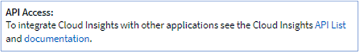
Links in der Spalte „triggeredOn“ auf der Seite Alerts list wird zur entsprechenden Landing Page navigieren, sofern für dieses Objekt eine Landing Page verfügbar ist.
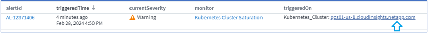
Sehen Sie alle Änderungen in Ihrem Namespace
Mit der Kubernetes-Änderungsanalyse können Sie jetzt einen Überblick über die Änderungen bei der Auswahl von Cluster und Namespace erhalten. Zuvor muss auch Workload ausgewählt worden sein. Beim Filtern nach Cluster und Namespace wird die Chronik aller Workload-Änderungen in diesem Namespace auf einer Zeile angezeigt.

Verwandte Protokolle für Warnmeldungen
Beim Anzeigen einer Protokollwarnung werden die zugehörigen Protokolleinträge in einer neuen Tabelle angezeigt. Ein Protokolleintrag hängt zusammen, wenn er in derselben Quelle und demselben Zeitrahmen wie die Warnmeldung auftritt, und unterliegt denselben Bedingungen. Wählen Sie „Protokolle analysieren“, um weitere Informationen zu erhalten.

ONTAP-Switch-Daten erfassen
Cloud Insights kann Daten von den Back-End-Switches des ONTAP Systems erfassen; aktivieren Sie einfach die Erfassung im Abschnitt „Advanced Configuration “ des Datensammlers und stellen Sie sicher, dass das ONTAP-System so konfiguriert ist, dass es bereitgestellt wird "Switch-Informationen" Und hat das entsprechende Berechtigungen Einstellen.
Workload Security Data Collector API
In großen Umgebungen können Sie die Erstellung von Workload Security Collectors mithilfe der neuen Data Collectors API automatisieren. Navigieren Sie zu Admin > API Access > API Documentation, und wählen Sie den API-Typ Workload Security aus, um weitere Informationen zu erhalten.
Januar 2024
Testen Sie die Cloud Insights Funktionen, die Sie noch nicht verwendet haben
Zusätzlich zu Ihrer ersten Testversion von Cloud Insights können Sie von diesen Funktionen profitieren "Modulversuche". Wenn Sie beispielsweise Cloud Insights abonniert haben und schon Storage und Virtual Machines überwacht haben, können Sie, wenn Sie Ihrer Umgebung Kubernetes hinzufügen, automatisch eine 30-Tage-Testversion von Kubernetes Observability starten. Die Nutzung der gemanagten Kubernetes Observability-Einheit wird erst nach Ende des Testzeitraums mit Ihren abonnierten Berechtigungen gerechnet.
Wie gut sind meine Workloads?
Der Workload-Status ist auf der Seite Kubernetes > Explore > Workloads auf einen Blick verfügbar. So können Sie schnell erkennen, welche Workloads eine gute Performance aufweisen und welche Unterstützung benötigen.
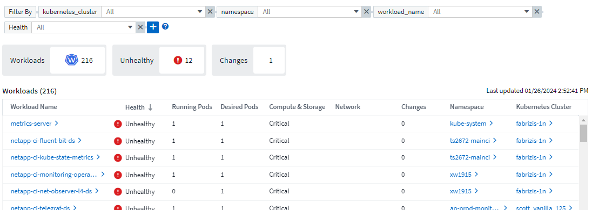
Updates Für Data Collector
Data Domain-Identifizierung
Der Data Domain Collector wurde verbessert, um HA-Systeme für die Haltbarkeit bei Failover-Ereignissen besser zu identifizieren. Diese Änderung führt zu einer * einmaligen * Neuidentifikation von Data Domain-Appliances in HA-Systemen, was in der Folge dazu führt, dass alle Anmerkungen zu diesen Assets entfernt werden (da diese Arrays neu identifiziert werden). Sie müssen Anmerkungen erneut an Ihre Data Domain-Objekte anhängen.
Verbesserter ML-Algorithmus zur Erkennung von Ransomware
Workload Security umfasst einen neuen ML-Algorithmus zur Ransomware-Erkennung der zweiten Generation, der die anspruchsvollsten Angriffe schneller und exakter erkennt.
„Saisonalität“ von Verhaltensweisen: Das Verhalten am Wochenende kann sich an verschiedenen Mustern des Wochentags oder des morgendlichen Verhaltens vom Nachmittag anpassen. Bei Workload-Sicherheits-Algorithmen wird diese Saisonabhängigkeit berücksichtigt.
Dezember 2023
Change Analytics auf einen Blick
Kubernetes "Analyse Ändern" Sie erhalten einen All-in-One-Überblick über die neuesten Änderungen an Ihrer Kubernetes-Umgebung. Warnmeldungen und Bereitstellungsstatus stehen Ihnen jederzeit zur Verfügung. Mit Change Analytics lassen sich jede Implementierungs- und Konfigurationsänderung nachverfolgen und mit dem Zustand und der Performance von Kubernetes-Services, Infrastruktur und Clustern korrelieren.

Kubernetes Workload Performance Dashboard
Die Workload-Performance ist im umfassenden Kubernetes Workload Performance Dashboard auf einen Blick verfügbar. Sehen Sie sich schnell Diagramme zu Volume-, Durchsatz-, Latenz- und Lösungstrends sowie eine Tabelle des Workload-Datenverkehrs für jeden Namespace in Ihrer Umgebung an. Filter ermöglichen eine einfache Fokussierung auf Bereiche, die von Interesse sind.


Abfragedetails auf einem Bildschirm
Wenn Sie in einer Abfrage eine Zeile auswählen, wird ein Seitenfenster geöffnet, in dem Attribut-, Anmerkungs- und Kennzahlendetails für die ausgewählte Zeile angezeigt werden. Dadurch erhalten Sie hilfreiche Informationen, ohne einen Drilldown auf die Zielseite des Objekts durchführen zu müssen. Links in der Reihe oder im Seitenbereich ermöglichen eine einfache Navigation.

Aktualisierungen des Data Collectors:
-
Brocade FOS REST: Dieser Kollektor wird aus "Preview" entfernt und ist nun allgemein verfügbar. Einige Dinge zu beachten:
-
FOS führte seine REST API mit FOS 8.2 ein. Aber einige Funktionen wie Routing haben nur REST API-Fähigkeiten mit 9.0 erhalten.
-
Wenn Sie eine Fabric haben, die aus gemischten FOS-Assets 8.2 höher sowie einigen < 8.2 besteht, kann der Cloud Insights-FOS-REST-Collector diese älteren Assets nicht erkennen. Sie können den FOS-REST-Collector bearbeiten und eine kommagetrennte Liste der IPv4-Adresse dieser Geräte erstellen, um sie von diesem Collector auszuschließen.
-
-
SELinux: Cloud Insights enthält Verbesserungen an der Erstinstallation der Linux Acquisition Unit, um die Robustheit des Betriebs in Linux-Umgebungen mit aktivierter SELinux Enforcement zu gewährleisten. Diese Verbesserungen wirken sich nur auf New AU-Bereitstellungen aus. Wenn Sie Probleme mit SELinux im Zusammenhang mit AU-Upgrades haben, wenden Sie sich an den NetApp-Support, um Ihre SELinux-Konfiguration zu beheben.
November 2023
Workload-Sicherheit: Anhalten/Fortsetzen eines Collectors
In Workload Security können Sie einen Data Collector anhalten, wenn sich der Collector im Status „Running“ befindet. Öffnen Sie das Menü „drei Punkte“ für den Collector und wählen Sie PAUSE. Während der Collector angehalten wird, werden keine Daten von ONTAP erfasst und keine Daten vom Collector an ONTAP gesendet. Wählen Sie Fortsetzen, um die Erfassung erneut zu starten.
Support-Informationen Zum Storage-Node
Auf einer Landing Page des Storage-Node finden Sie im Abschnitt User Data auf einen Blick Informationen zu Ihrem Supportangebot, dem aktuellen Status, dem Support-Status und dem Enddatum der Garantie. Beachten Sie, dass Cloud Insights diese Informationen derzeit nur automatisch für NetApp-Geräte veröffentlicht. Beachten Sie auch, dass diese Support-Felder Anmerkungen sind, sodass sie in Abfragen und Dashboards verwendet werden können.

Zuordnen von VMware-Tags zu Cloud Insights-Annotationen
Der "VMware" Mithilfe des Datensammlers können Sie Cloud Insights Textanmerkungen mit Tags mit demselben Namen ausfüllen, die auf VMware konfiguriert sind.
Verbesserungen der Brocade CLI-Collector-Zuverlässigkeit für FOS 9.1.1c und höhere Firmware
Bei einigen Brocade Fibre-Channel-Switches, auf denen die Firmware 9.1.1c ausgeführt wird, kann die Ausgabe bestimmter CLI-Befehle mit dem „motd“-Anmeldebannertext oder Warnungen für Benutzer, die Standardpasswörter ändern, vorangestellt werden. Der Brocade CLI-Collector wurde verbessert, um diese beiden Arten von überflüssigen Text zu ignorieren.
Vor dieser Verbesserung waren bei diesem Collector-Typ wahrscheinlich nur FOS 9.1.1c-Switches ohne vorhandene Virtual Fabrics erkennbar.
Oktober 2023
Verbesserte Workload-Sicherheit
Die Workload-Sicherheit wurde durch folgende Funktionen verbessert:
-
Zugriff verweigert: Workload-Sicherheit integriert sich in ONTAP um zu empfangen "„Zugriff verweigert“-Ereignisse" Und bieten eine zusätzliche Schicht für Analysen und automatische Reaktionen.
-
Zulässige Dateitypen: Wenn ein Ransomware-Angriff für eine bekannte Dateierweiterung erkannt wird, kann diese Dateierweiterung zu einem hinzugefügt werden "Zulässige Dateitypen" Liste, um unnötige Warnmeldungen zu vermeiden.
Modulversuche
Zusätzlich zu Ihrer ersten Testversion von Cloud Insights können Sie von diesen Funktionen profitieren "Modulversuche". Wenn Sie beispielsweise bereits Infrastruktur-Observability abonniert haben, aber Kubernetes in Ihre Umgebung integrieren möchten, können Sie automatisch für eine 30-Tage-Testversion von Kubernetes Observability starten. Ihnen wird am Ende des Testzeitraums nur die Nutzung Ihrer von Kubernetes Observability gemanagten Einheit in Rechnung gestellt.
Beschränken Sie den Zugriff auf bestimmte Domänen
Administratoren und Kontoinhaber haben jetzt die Möglichkeit, dies zu erreichen "Einschränken des Cloud Insights-Zugriffs" E-Mail-Domänen, die sie angeben. Gehen Sie zu Admin > User Management und wählen Sie die Schaltfläche Domains einschränken.

Updates Für Data Collector
Die folgenden Änderungen an der Data Collector/Acquisition Unit sind vorhanden:
-
Isilon / PowerScale REST: Unter dem Namen emc_isilon.node_pool.* wurden verschiedene neue Attribute und Kennzahlen zu den erweiterten Analysefunktionen von Cloud Insights hinzugefügt. Mit diesen Zählern und Attributen können Benutzer Dashboards und Monitore für den Kapazitätsverbrauch von Node_Pool erstellen. Benutzer mit Isilon-Clustern, die aus unterschiedlichen Hardware-Node-Modellen erstellt wurden, verfügen über mehrere Node-Pools. Das Verständnis der HDD-/SSD-/Gesamtkapazität auf Node-Pool-Ebene ist sowohl für die Überwachung als auch für die Planung von Nutzen.
-
Rubrik "Dienstkonto" Authentifizierungsunterstützung: Cloud Insights' Rubik-Kollektor unterstützt jetzt sowohl die traditionelle HTTP-Basisauthentifizierung (Benutzername und Passwort), als auch den Dienst-Account-Ansatz von Rubrik, der einen Benutzernamen + Schlüssel + Organisations-ID erfordert.
September 2023
In den Protokollen finden Sie ganz einfach, was Sie möchten
Log Query (Observability > Log Queries > +New Log Query) enthält eine Reihe von "Vorgestellt werden" Um die Protokollforschung einfacher und informativer zu machen.
Ein-/Ausschließen
Beim Filtern nach einem Wert können Sie ganz einfach wählen, ob include oder exclude Ergebnisse dem Filter entsprechen. Durch Auswahl von „Exclude“ wird ein Filter „NOT <value>“ erstellt. Sie können die ein- und Ausschlusswerte in einem einzelnen Filter kombinieren.
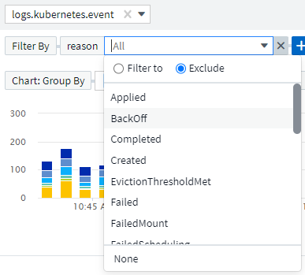
Erweiterte Abfrage
Advanced Querying gibt Ihnen die Möglichkeit, "freie Form"-Filter zu erstellen, indem Sie Werte mit AND, NOT, OR, Wildcards, etc. Kombinieren ODER ausschließen

Die Optionen „Filtern nach“ und „Erweiterte Abfrage“ werden zu einer einzigen Abfrage zusammengefasst. Die Ergebnisse werden in der Ergebnisliste und im Diagramm angezeigt.
Gruppierung im Diagramm
Wenn Sie ein Protokollattribut für Gruppieren nach auswählen, werden in der Liste und im Diagramm die Ergebnisse des aktuellen Filters angezeigt. Im Diagramm werden die Spalten in Farben gruppiert. Wenn Sie den Mauszeiger über eine Spalte im Diagramm bewegen, werden Details zu den spezifischen Einträgen angezeigt, ähnlich den allgemeinen Informationen, die beim erweitern der Diagrammlegende angezeigt werden. In der Legende können Sie auch festlegen, ob ein Filter ein- oder Ausschlussfilter für eine bestimmte Gruppierung verwendet werden soll.
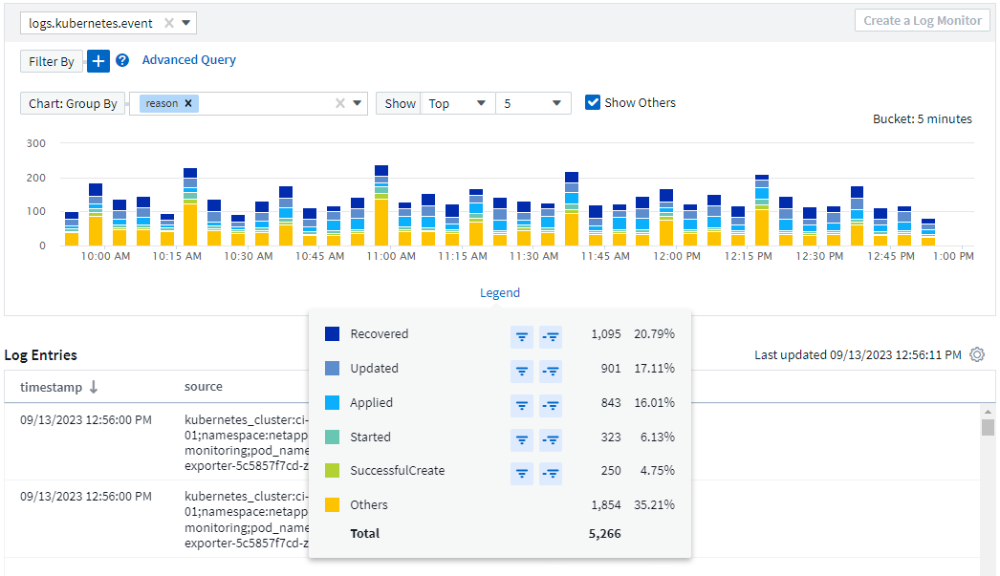
Fenster „Schwebende“ Protokolldetails
Wenn Sie Protokolle mithilfe der Protokollabfrage untersuchen, wird durch Auswahl eines Eintrags in der Liste ein Detailfenster für diesen Eintrag geöffnet. Sie können nun wählen, ob das Schiebefenster „frei“ (d. h. über den Rest des Bildschirms angezeigt) oder „in Seite“ (d. h. als eigenen Rahmen auf der Seite angezeigt) angezeigt werden soll. Um zwischen diesen Ansichten zu wechseln, klicken Sie oben rechts im Bedienfeld auf die Schaltfläche „in Page / Floating“.

Schließen Sie das Menü ab
Sie können das linke Cloud Insights-Navigationsmenü durch Auswahl der Schaltfläche „Minimieren“ unter dem Menü ausblenden. Wenn das Menü minimiert ist, bewegen Sie den Mauszeiger über ein Symbol, um zu sehen, welcher Abschnitt geöffnet wird. Durch Auswahl des Symbols wird das Menü geöffnet und Sie gelangen direkt zu diesem Abschnitt.

Verbesserungen Des Data Collectors
Cloud Insights erleichtert das Anzeigen und Auffinden von Daten-Collector-Informationen:
-
Die Verarbeitung von Datensammlerlisten ist effizienter, was bedeutet, dass die Zeit, die benötigt wird, um diese Listen anzuzeigen und zu navigieren, stark reduziert wird. Wenn Sie eine große Umgebung mit vielen Datensammlern haben, werden Sie eine deutliche Verbesserung bei der Auflistung Ihrer Datensammler sehen.
-
Die Data Collector Support Matrix ist von einer .PDF-Datei auf eine .HTML-basierte Seite umgestiegen, schneller zu navigieren und einfacher zu warten. Schauen Sie sich die neue Matrix hier an: https://docs.netapp.com/us-en/cloudinsights/reference_data_collector_support_matrix.html
August 2023
Sammeln von Isilon/PowerScale-Protokollen und Advanced Analytics-Daten
Die Isilon REST- und PowerScale Rest-Collectors enthalten die folgenden Verbesserungen:
-
Isilon-Protokollereignisse stehen zur Verwendung in Abfragen und Warnmeldungen zur Verfügung
-
Isilon Advanced Analytic-Attribute stehen für Abfragen, Dashboards und Warnmeldungen zur Verfügung:
-
emc_isilon.Cluster
-
emc_isilon.node
-
emc_isilon.node_disk
-
emc_isilon.net_iface
-
Diese sind standardmäßig für Benutzer der Isilon REST- und/oder PowerScale REST-Collectors aktiviert. NetApp empfiehlt Benutzern des CLI-basierten Collectors von Isilon dringend, zu dem neuen REST-API-basierten Collector zu migrieren, um Verbesserungen wie die oben genannten zu erhalten.
Verbesserte Workload-Map
Die Workload-Zuordnung ist benutzerfreundlicher und weniger laut. Sie gruppiert alle ähnlichen externen Services zu einem Node, wenn sie mit denselben Workloads kommunizieren. Dadurch verringert sich die Komplexität der Grafik und es lässt sich leichter nachvollziehen, wie Services miteinander verbunden sind.
Wenn Sie einen gruppierten Knoten auswählen, wird eine detaillierte Tabelle mit den Kennzahlen für den Netzwerkverkehr für jeden externen Service angezeigt, der für diesen Knoten relevant ist.
Anpassung der Nutzung von Kubernetes Managed Unit
Wenn eine Compute-Ressource in Ihrer Kubernetes-Cluster-Umgebung sowohl vom NetApp Kubernetes Monitoring Operator als auch vom zugrunde liegenden Datensammler für die Infrastruktur (z. B. VMware) gezählt wird, wird die Nutzung dieser Ressourcen angepasst, um eine möglichst effiziente Zählung der gemanagten Einheiten zu gewährleisten. Sie können die Kubernetes-MU-Anpassungen auf der Seite Admin > Subscription sowohl auf der Registerkarte Summary als auch Usage anzeigen.
Registerkarte „Zusammenfassung“:

Registerkarte „Verwendung“:

Änderungen bei der Erfassung/Erfassung:
Die folgenden Änderungen an der Data Collector/Acquisition Unit sind vorhanden:
-
Acquisition Units unterstützen jetzt RHEL 8.7.
Verbesserte Menüs
Wir haben das Navigationsmenü auf der linken Seite aktualisiert, um die Workflows unserer Kunden besser zu unterstützen. Neue Elemente der obersten Ebene wie Kubernetes ermöglichen beschleunigten Zugriff auf die Bedürfnisse des Kunden, und eine konsolidierte Administratorkonsole unterstützt die Rolle des Mandanten-Eigentümers.
Hier einige weitere Beispiele für die Änderungen:
-
Im obersten Observability-Menü werden Datenerkennung, Warnmeldungen und Protokollabfragen angezeigt
-
Die Funktionen von ‘API Access für Beobachtbarkeit und Workload-Sicherheit befinden sich unter einem Menü
-
Ebenso für Observability und Workload Security ‘Benachrichtigungen’ Funktionalität, jetzt auch unter einem Menü

Hier ist eine kurze Liste der Funktionen, die Sie unter jedem Menü finden:
Beobachtbarkeit:
-
Mehr Erfahren (Dashboards, Kennzahlen-Abfragen, Infrastruktureinblicke)
-
Warnmeldungen (Monitore und Alarmfunktionen)
-
Kollektoren (Datensammler und Erfassungseinheiten)
-
Protokollabfragen
-
Anreichern (Anmerkungs- und Anmerkungsregeln, Anwendungen, Geräteauflösung)
-
Berichterstellung
Kubernetes:
-
Cluster Exploration und Network Map
Workload-Sicherheit:
-
Meldungen
-
Forensik
-
Kollektoren
-
Richtlinien
Grundlagen von ONTAP:
-
Datensicherung
-
Sicherheit
-
Meldungen
-
Infrastruktur
-
Netzwerkbetrieb
-
Workloads
*VMware
Admin.:
-
API-Zugriff
-
Prüfung
-
Benachrichtigungen
-
Abonnementinformationen
-
Benutzerverwaltung
Juli 2023
Letzte Änderungen Anzeigen
Die Landing Pages des Data Collectors enthalten nun eine Liste der letzten Änderungen. Klicken Sie einfach auf die Schaltfläche „Letzte Änderungen“ unten auf einer beliebigen Landing Page für den Datensammler, um die letzten Änderungen an der Datensammlung anzuzeigen.

Verbesserungen Des Bedieners
Die folgenden Verbesserungen wurden an vorgenommen "Kubernetes Operator" Implementierung:
-
Option zum Umgehen der metrischen Erfassung von Andockern
-
Möglichkeit, telegraf-Demonsets und Replikasets Toleranzen hinzuzufügen und anzupassen
Einblick: Cold Storage-Lösung Zurückgewinnen
Der "Gewinnen Sie einen Einblick in ONTAP Cold Storage zurück" Unterstützt jetzt FlexGroups und ist jetzt für alle Kunden verfügbar.
Unterschrift Des Bedieners
Für Kunden, die ein privates Repository für ihren NetApp-Kubernetes-Überwachungsoperator verwenden, können Sie jetzt den öffentlichen Schlüssel für die Bildsignatur während der Installation des Bedieners kopieren, um die Authentizität der heruntergeladenen Software zu bestätigen. Wählen Sie während des optionalen Schritts die Schaltfläche Copy Image Signature Public Key aus, um das Bedienerbild in Ihr privates Projektarchiv zu laden.

Aggregation, bedingte Formatierung und mehr für Abfragen
Aggregation, Einheitenauswahl, bedingte Formatierung und Spaltenumbenennung gehören zu den nützlichsten Funktionen eines Dashboard-Tabellen-Widgets, und jetzt sind dieselben Funktionen verfügbar "Abfragen".

Diese Funktionen sind jetzt für Integrationsdaten (Kubernetes, ONTAP Advanced Metrics usw.) verfügbar und werden in Kürze auch für Infrastrukturobjekte (Storage, Volume, Switch usw.) erhältlich sein.
API für Audit
Sie können jetzt eine API zum Abfragen oder Exportieren von überwachten Ereignissen verwenden. Gehen Sie zu Admin > API Access, und wählen Sie den Link API Documentation, um Informationen zu erhalten.

Data Collector: Trident Economy
Cloud Insights unterstützt jetzt den Trident-Wirtschaftstreiber und bietet damit folgende Vorteile:
-
Erhalten Sie Einblick in die Pod-zu-ONTAP Qtree-Zuordnung und Performance-Metriken.
-
Sorgen Sie für eine nahtlose Fehlerbehebung und einfache Navigation von Kubernetes Pods zum Back-End-Storage
-
Proaktive Erkennung von Back-End-Performance-Problemen mit Monitoren
Juni 2023
Überprüfen Sie Ihre Nutzung
Ab Juni 2023 bietet Cloud Insights eine Aufschlüsselung der Auslastung der verwalteten Einheiten basierend auf dem Funktionssatz. Sie können jetzt die Managed Unit (MU)-Nutzung für Ihre Infrastruktur sowie die MU-Nutzung in Verbindung mit Kubernetes schnell anzeigen und überwachen.

Kubernetes-Netzwerküberwachung und -Zuordnung ist für alle verfügbar
Der "Kubernetes-Netzwerk-Performance und -Zuordnung" Vereinfacht die Fehlerbehebung durch die Zuordnung von Abhängigkeiten zwischen Kubernetes-Workloads und bietet Echtzeiteinblick in die Latenzen und Anomalien der Kubernetes-Netzwerk-Performance. So können Performance-Probleme erkannt werden, bevor sie sich auf die Benutzer auswirken. Viele Kunden fanden es hilfreich während der Vorschau, und jetzt ist es für alle zu genießen.
Änderungen bei der Erfassung/Erfassung:
Die folgenden Änderungen an der Data Collector/Acquisition Unit sind vorhanden:
-
Die Mus für Data Domain und Cohesity betragen 40 tib : 1 MU.
-
Acquisition Units unterstützen jetzt RHEL und Rocky 9.0 und 9.1.
Neue ONTAP Essentials Dashboards
Die folgenden ONTAP Essentials Dashboards sind in Vorschauumgebungen verfügbar und jetzt für alle verfügbar:
-
Sicherheits-Dashboard
-
Data Protection Dashboard (einschließlich Überblick über den lokalen und den Remote-Schutz)
Zusätzliche Systemmonitore
Die folgenden Systemmonitore sind im Lieferumfang von Cloud Insights enthalten:
-
Der FCP-Service für Storage-VM ist nicht verfügbar
-
Speicher-VM iSCSI-Service nicht verfügbar
Mai 2023
Verbesserte Installation Von Kubernetes Monitoring Operator
Installation und Konfiguration des "NetApp Kubernetes Monitoring Operator" Mit den folgenden Verbesserungen ist es einfacher denn je:
-
Umgebung "Konfigurationseinstellungen" Werden in einer einzelnen, selbst dokumentierten Konfigurationsdatei gespeichert.
-
Schritt-für-Schritt-Anleitung zum Hochladen von Kubernetes Monitoring Operator Images in Ihr privates Repository.
-
Upgrades sind ganz einfach mit einem einzigen Befehl möglich. So können Sie Ihr Kubernetes-Monitoring aktualisieren und benutzerdefinierte Konfigurationen behalten.
-
Sicherer: API-Schlüssel verwalten Geheimnisse sicher.
-
Einfache Integration und Implementierung mit CI/CD-Automatisierungstools.
Storage-Virtualisierung
Cloud Insights kann zwischen einem Storage-Array mit lokalem Speicher oder der Virtualisierung anderer Storage-Arrays unterscheiden. So können Sie Kosten nachvollziehen und die Performance vom Front-End bis zum Back-End Ihrer Infrastruktur differenzieren.

Neue Webhook-Parameter
Beim Erstellen eines "Webhook" Benachrichtigung können Sie diese Parameter nun in Ihre Webhook-Definition aufnehmen:
-
%%TriggeredOnKeys%%
-
%%TriggeredOnValues%%
Berichte zu Kubernetes-Daten
Von Cloud Insights gesammelte Kubernetes-Daten – einschließlich persistenter Volumes (PV), PVC, Workloads, Cluster und Namespaces – können jetzt in der Berichterstellung verwendet werden. Dies ermöglicht Chargeback, Trendanalysen, Prognosen, TTF-Berechnungen, Und andere Geschäftsberichte zu Kennzahlen für Kubernetes.
Standard-ONTAP-Systemmonitore für neue Kunden aktiviert
Viele ONTAP-Systemmonitore sind in neuen Cloud Insights-Umgebungen standardmäßig aktiviert (d. h. reaktiviert). Bisher haben die meisten Monitore den Standardstatus „Paused“. Da die geschäftlichen Anforderungen von Unternehmen zu Unternehmen variieren, empfehlen wir immer einen Blick auf die zu werfen "Systemmonitore" In Ihrer Umgebung vorhalten und je nach Alarmanforderungen wieder aufnehmen.
April 2023
Performance-Monitoring und -Zuordnung von Kubernetes
Der "Kubernetes-Netzwerk-Performance und -Zuordnung" Die Funktion vereinfacht die Fehlerbehebung durch Zuordnen von Abhängigkeiten zwischen Kubernetes-Workloads. Es bietet Echtzeiteinblicke in Latenzen und Anomalien bei der Kubernetes-Netzwerk-Performance, um Performance-Probleme zu identifizieren, bevor sie sich auf die Benutzer auswirken. Diese Funktion hilft Unternehmen, durch Analyse und Prüfung des Kubernetes-Traffic-Flows die Gesamtkosten zu senken.
Die wichtigsten Funktionen • die Workload-Map präsentiert Kubernetes-Workload-Abhängigkeiten und -Abläufe und hebt Netzwerk- und Performance-Probleme hervor. • Monitoring des Netzwerkverkehrs zwischen Kubernetes-Pods, Workloads und Nodes; Ermittlung der Quelle von Traffic- und Latenzproblemen • Senkung der Gesamtkosten durch Analyse des Ingress-, Egress-, Regions- und zonenübergreifenden Netzwerk-Traffics.
Workload-Zuordnung, die Details zum „Slideout“ anzeigt:

Kubernetes Performance Monitoring and Map ist als erhältlich "Vorschau" Merkmal:
ONTAP Essentials Sicherheitskonsole
Der "Sicherheits-Dashboard" Bietet einen sofortigen Überblick über Ihre aktuelle Sicherheitssituation und zeigt Diagramme zur Verschlüsselung von Hardware- und Software-Volumes, zum Ransomware-Schutz und zu Clusterauthentifizierungsmethoden an. Das Security Dashboard ist als verfügbar "Vorschau" Merkmal:

Rückgewinnung von ONTAP Cold Storage
Der Reclaim ONTAP Cold Storage Insight liefert Daten zur kalten Kapazität, potenziellen Kosten-/Energieeinsparungen sowie empfohlene Maßnahmen für Volumes auf ONTAP Systemen.

Mit dieser Insight können Sie Fragen wie:
-
Welche Menge an kalten Daten in einem Storage Cluster befinden sich auf (a) kostenleistungsfähigen SSD-Festplatten, (b) HDD-Festplatten und (c) virtuellen Festplatten?
-
Welche Workloads leisten in Bezug auf den nicht optimierten Storage die größten Beiträge?
-
Wie lange (in Tagen) wurden die Daten für einen bestimmten Workload nicht genutzt?
Rückforderung ONTAP Cold Storage wird als A betrachtet "Vorschau" Feature und kann daher geändert werden.
Die Abonnementbenachrichtigung steuert auch Banner-Meldungen
Durch das Festlegen von Empfängern für Abonnementbenachrichtigungen (Admin > Benachrichtigungen) wird jetzt auch festgelegt, wer abonnements in-Product-Banner-Benachrichtigungen sehen wird.

Reporting hat ein neues Aussehen
Sie werden feststellen, dass die Cloud Insights-Berichtsbildschirme ein neues Aussehen haben und dass sich einige der Menünavigation geändert haben. Diese Bildschirme und Navigationsänderungen wurden im aktuellen aktualisiert "Berichtsdokumentation".
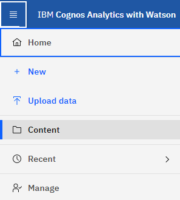
Monitore standardmäßig angehalten
Denken Sie daran, sich für neue Cloud Insights-Umgebungen zu eignen "Systemdefinierte Monitore" Senden Sie keine Warnmeldungen standardmäßig. Sie müssen Benachrichtigungen für jeden Monitor aktivieren, den Sie benachrichtigen möchten, indem Sie eine oder mehrere Bereitstellungsmethoden für den Monitor hinzufügen. Für bestehende Cloud Insights-Umgebungen wurde die standardmäßige Empfängerliste global für alle systemdefinierten Monitore entfernt, die sich derzeit im Status Paused befinden. Benutzerdefinierte Benachrichtigungen bleiben unverändert, ebenso wie Benachrichtigungseinstellungen für aktuell aktive systemdefinierte Monitore.
Suchen Sie die Registerkarte API-Messung?
API Metering wurde von der Seite Abonnement auf die Seite Admin > API Access verschoben.
März 2023
Cloud-Anbindung für ONTAP 9.9+ veraltet
Die Cloud-Verbindung für den ONTAP 9.9+-Datensammler wird veraltet. Ab dem 4. April 2023 werden die Datensammler von Cloud Connection in Ihrer Umgebung keine Daten mehr sammeln, sondern beim Abrufen einen Fehler anzeigen. Der Datensammler der Cloud-Verbindung wird in einem späteren Update komplett aus Cloud Insights entfernt.
Vor dem 4. April 2023 ist die Konfiguration eines neuen Datensammlers für die NetApp ONTAP Datenmanagement-Software für alle ONTAP Systeme, die derzeit über Cloud Connection erfasst werden, erforderlich. "Weitere Informationen".
Januar 2023
Neue Protokollmonitore
Wir haben fast zwei Dutzend hinzugefügt "Zusätzliche Systemmonitore" Um bei unterbrochenen Interconnect-Links, Heartbeat-Problemen und vielem mehr eine Warnung zu erhalten. Darüber hinaus wurden drei neue Data Protection Log-Monitore hinzugefügt, um Änderungen bei der automatischen Neusynchronisierung von SnapMirror, der MetroCluster-Spiegelung und dem Resync von FabricPool-Spiegelung zu benachrichtigen.
Beachten Sie, dass einige dieser Monitore standardmäßig aktiviert sind. Sie müssen sie Pause ausführen, wenn Sie darauf nicht hinweisen möchten. Beachten Sie auch, dass diese Monitore nicht für die Übermittlung von Benachrichtigungen konfiguriert sind. Sie müssen Benachrichtigungsempfänger auf diesen Monitoren konfigurieren, wenn Sie Benachrichtigungen per E-Mail oder Webhook senden möchten.
.CSV-Export für alle Dashboard-TabellenWidgets
Es ist wichtig, dass Sie den Zugriff auf Ihre Daten sicherstellen, sodass wir .CSV-Export durchgeführt haben Verfügbar für alle metrischen Abfragen, Dashboard-Tabellen-Widgets und Objekt-Landing Pages, unabhängig vom Datentyp (Asset oder Integration), den Sie abfragen.
Anpassungen von Daten wie Spaltenauswahl, Umbenennung von Spalten und Umbauten von Einheiten sind nun auch in der neuen Exportfunktion enthalten.
Dezember 2022
Entdecken Sie Ransomware-Schutz und andere Sicherheitsfunktionen während der Cloud Insights-Testversion
Wenn Sie sich ab heute für eine neue Testversion von Cloud Insights anmelden, können Sie sich über Sicherheitsfunktionen wie Ransomware-Erkennung und automatisierte benutzerblockierende Antwortrichtlinien informieren. Wenn Sie sich noch nicht für Ihren Testlauf angemeldet haben, tun Sie es noch heute!
Kubernetes-Workloads verfügen über eine eigene Landing Page
Workloads sind eine wichtige Komponente in Ihrer Kubernetes-Umgebung. Cloud Insights bietet daher jetzt Landing Pages für diese Workloads. Hier können Sie Probleme anzeigen, untersuchen und beheben, die sich auf Ihre Kubernetes-Workloads auswirken.
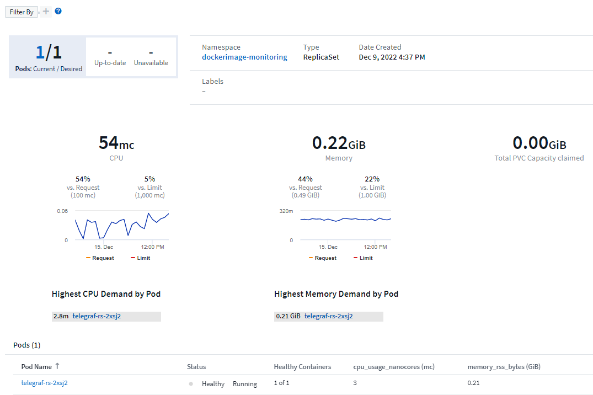
Überprüfen Sie Ihre Prüfsummen
Sie haben uns gebeten, Ihnen während der Installation des Agenten für Windows und Linux Prüfsummenwerte bereitzustellen, und wir denken, dass das eine tolle Idee ist. Hier sind sie also:
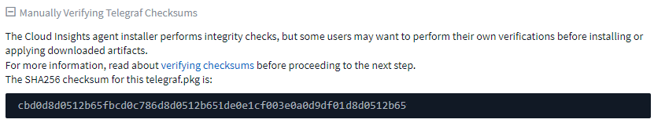
Verbesserungen Bei Der Protokollierung Von Warnmeldungen
Gruppieren Nach
Wenn Sie einen Protokollmonitor erstellen oder bearbeiten, können Sie jetzt Attribute „Gruppieren nach“ festlegen, um eine zielgerichteter Warnung zu ermöglichen. Suchen Sie nach den Attributen „Gruppieren nach“ unter den „Filter“-Einstellungen in Ihrer Monitordefinition.

Diese Änderung bringt metrische Monitore und Log-Monitore in Funktionsparität durch Normalisierung des Aspekts „Gruppe nach“ der Monitor-Definitionen. Mit dieser Parität können Kunden zur weiteren Anpassung alle systemdefinierten Standardmonitore klonen/duplizieren.
Duplizieren
Sie können jetzt die Monitore Änderungsprotokoll, Kubernetes Log und Data Collector Log klonen (duplizieren). Dadurch wird ein neuer benutzerdefinierter Protokollmonitor erstellt, den Sie an Ihre spezifischen Definitionen anpassen können.

11 Neue Standard-ONTAP-Monitore für Business Continuity bei SnapMirror
Wir haben fast ein Dutzend neue hinzu "Systemmonitore" Für SnapMirror for Business Continuity (SMBC), die eine Warnung bei Änderungen an SMBC-Zertifikaten und ONTAP Mediatoren enthält.
November 2022
Mehr als 40 neue Sicherheits-, Datenerfassungs- und CVO-Monitore!
Es gibt Dutzende neue, systemdefinierte Monitore, um Sie bei potenziellen Problemen mit Cloud Volumes, Sicherheit und Datensicherung zu warnen. Weitere Informationen zu diesen Monitoren "Hier".
Oktober 2022
Bessere und genauere Ransomware-Erkennung mit ONTAP Integration Autonomer Ransomware-Schutz
Cloud Secure verbessert die Ransomware-Erkennung durch Integration mit ONTAP "Autonomer Schutz Durch Ransomware" (ARP).
Cloud Secure erhält ONTAP ARP-Ereignisse zu potenziellen Volume-Dateiverschlüsselungsaktivitäten und
-
Korreliert Ereignisse der Volume-Verschlüsselung mit den Benutzeraktivitäten, um festzustellen, wer die Schäden verursacht,
-
Implementiert automatische Antwortrichtlinien, um den Angriff zu blockieren,
-
Ermittelt die betroffenen Dateien, was ein schnelleres Recovery ermöglicht und Untersuchungen zu Datenschutzverletzungen durchführt.
September 2022
Monitore in der Basic Edition verfügbar
ONTAP "Standardmonitore" Jetzt für die Verwendung in der Cloud Insights Basic Edition verfügbar. Dies umfasst mehr als 70 Infrastrukturmonitore und 30 Workload-Beispiele.
ONTAP Power und StorageGRID Dashboards
Die Dashboard-Galerie enthält ein neues Dashboard für ONTAP-Stromversorgung und -Temperatur sowie vier Dashboards für StorageGRID. Wenn in Ihrer Umgebung ONTAP-Leistungskennzahlen und/oder StorageGRID-Daten erfasst werden, importieren Sie diese Dashboards, indem Sie +aus Galerie auswählen.
Übersichtlichkeit der Schwellenwerte auf einen Blick in Tabellen
Mit Conditional Formatting können Sie Schwellenwerte auf Warnebene und kritische Ebene in den TabellenWidgets festlegen und hervorheben. Dadurch erhalten Sie sofortige Sichtbarkeit für Ausreißer und außergewöhnliche Datenpunkte.

Sicherheitsmonitor
Cloud Insights gibt eine Warnmeldung aus, wenn erkannt wird, dass der FIPS-Modus auf dem ONTAP System deaktiviert ist. Weitere Informationen "Systemmonitore", Und beobachten Sie diesen Raum für mehr Sicherheit Monitore, kommen bald!
Chat von überall
Chat mit einem NetApp Support-Experten auf jedem Cloud Insights-Bildschirm, indem Sie den neuen Link Hilfe > Live Chat auswählen. Hilfe ist über „?“ verfügbar. Symbol oben rechts auf dem Bildschirm.

Mehr sichtbare Einblicke
Wenn Ihre Umgebung eine hat "Insight" Beispielsweise Shared Ressourcen unter Stress oder _Kubernetes Namesaces, die nicht mehr über den Speicherplatz verfügen, umfassen Landing Pages für Ressourcen, die betroffen sind, jetzt Links zur Insight selbst und ermöglichen so eine schnellere Exploration und Fehlerbehebung.
Neue Datensammler
-
Amazon S3 (als Vorschau verfügbar)
-
Brocade FOS 9.0.x
-
Dell/EMC PowerStore 3.0.0.0
Andere Aktualisierungen Für Data Collector
Alle Datenquellen sind nun optimiert, um die Leistungsabfrage nach Aktualisierungen und/oder Patches der Erfassungseinheit fortzusetzen.
Betriebssystemunterstützung
Zusätzlich zu diesen werden die folgenden Betriebssysteme mit Cloud Insights Acquisition Units unterstützt "Unterstützung bereits vorhanden":
-
Red Hat Enterprise Linux 8.5, 8.6
August 2022
Cloud Insights hat einen neuen Look!
Ab diesem Monat wurde "Monitor and Optimize" umbenannt Beobachtbarkeit. Hier finden Sie alle Ihre Lieblingsfunktionen wie Dashboards, Abfragen, Warnmeldungen und Berichte. Suchen Sie darüber hinaus im neuen Menü Sicherheit nach Cloud Secure. Beachten Sie, dass sich nur die Menüs geändert haben; die Funktionsfunktionalität bleibt gleich.

Suchen Sie das Menü * Hilfe*?
Hilf jetzt lebt in der oberen rechten Seite des Bildschirms.

Sie sind nicht sicher, wo Sie anfangen sollen? Informieren Sie sich über die wichtigsten ONTAP-Funktionen.
"ONTAP-Grundlagen" Diese umfassen eine Reihe von Dashboards und Workflows, die detaillierte Einblicke in Ihre ONTAP-Bestände, Workloads und Datensicherung mit detaillierten Prognosen zur Storage-Kapazität und -Performance bieten. Sie sehen sogar, ob Controller mit hoher Auslastung arbeiten. ONTAP Essentials ist Ihr idealer Ort für alle Ihre NetApp ONTAP Monitoring-Anforderungen!
ONTAP Essentials – verfügbar in allen Editionen – ist für bestehende ONTAP-Betreiber und -Administratoren intuitiv gestaltet. Dadurch wird der Übergang von ActiveIQ Unified Manager zu Service-basierten Management-Tools erleichtert.

Speicherdatenfamilien werden zusammengeführt
Auf Nachfrage ist das nun ja. Die Dateneinheiten der Speicherbasis-2 und Base-10 werden jetzt in einer Produktfamilie zusammengefasst, von Bits und Bytes bis hin zu Tebits und Terabyte. Auf diese Weise können Sie Daten auf Ihren Dashboards einfacher anzeigen. Auch Datenraten sind jetzt eine große Familie von sich.

Wie viel Energie nutzt mein Storage?
Überwachen Sie Ihren Stromverbrauch, die Temperatur und die Lüftergeschwindigkeit für ein ONTAP Storage Shelf und Ihre Node-Nodes mit den Kennzahlen netapp_ontap.Storage_Shelf, netapp_ontap.System_Node und netapp_ontap.Cluster (nur Stromverbrauch).

Verfügt über abgestufte Funktionen von der Vorschau
Die folgenden Funktionen wurden aus der Vorschau entfernt und stehen nun allen Kunden zur Verfügung:
Funktion |
Beschreibung |
Kubernetes Namespaces sind nicht mehr platzsparend |
Die _Kubernetes Namesaces sind nicht mehr genügend Speicherplatz. Insight bietet Ihnen eine Übersicht über Workloads auf Ihren Kubernetes-Namespaces, die Gefahr laufen, dass der Speicherplatz zu knapp wird. Eine Schätzung für die verbleibende Anzahl an Tagen bevor der Speicherplatz voll wird."Weitere Informationen" |
Freigegebene Ressource Unter Stress |
Die Shared Ressource unter Stress Insight ermittelt mithilfe von KI/ML automatisch, wo Ressourcenkonflikte in Ihrer Umgebung zu einer Performance-Verschlechterung führen, alle von der IT betroffenen Workloads werden hervorgehoben und bietet empfohlene Aktionen zur Behebung für eine schnellere Behebung von Performance-Problemen."Weitere Informationen" |
Cloud Secure – Blockieren des Benutzerzugriffs bei Angriffen |
Besserer Schutz für geschäftskritische Daten durch die Möglichkeit, Benutzerzugriff bei einem Angriff zu blockieren Der Zugriff kann mithilfe von Automated Response Policies oder manuell über die Alarm- oder Benutzerdetails-Seiten gesperrt werden."Weitere Informationen" |
Wie ist meine Datenerfassung Gesundheit?
Cloud Insights bietet zwei neue Heartbeat-Monitore für Ihre Erfassungseinheiten sowie zwei Monitore, um Sie auf Fehler bei der Datenerfassung zu warnen. Diese können verwendet werden, um Sie schnell auf Probleme bei der Datenerfassung zu benachrichtigen.
Die folgenden Monitore sind nun in der Monitorgruppe Data Collection verfügbar:
-
Acquisition Unit Heartbeat-Critical
-
Heartbeat-Warnung Für Erfassungseinheit
-
Collector Fehlgeschlagen
-
Sammlerwarnung
Beachten Sie, dass sich diese Monitore standardmäßig im Status Paused befinden. Aktivieren Sie sie, um über Probleme bei der Datenerfassung informiert zu werden.
Automatische Erneuerung von API-Tokens
API-Access-Token können jetzt für die automatische Erneuerung festgelegt werden. Wenn Sie diese Funktion aktivieren, werden neue/aktualisierte API-Zugriffs-Tokens automatisch für ablaufende Token generiert. Cloud Insights-Agenten, die ein ablaufender Token verwenden, werden automatisch aktualisiert, um das entsprechende neue/aktualisierte API-Zugriffstoken zu verwenden, sodass sie weiterhin reibungslos arbeiten können. Aktivieren Sie einfach das Kontrollkästchen „Token automatisch erneuern“, wenn Sie Ihr Token erstellen. Diese Funktion wird derzeit auf Cloud Insights-Agenten unterstützt, die auf der Kubernetes-Plattform mit dem aktuellen NetApp Kubernetes Monitoring Operator ausgeführt werden.
Basic Edition bietet mehr als zuvor
Ihre Testversion wird beendet, aber Sie sind sich noch nicht sicher, ob ein Abonnement für Sie geeignet ist? Basic Edition bietet Ihnen schon immer die Möglichkeit, Cloud Insights mit Ihrem aktuellen ONTAP Datensammler weiter zu nutzen, aber jetzt können Sie auch VMware Version-, Topologie- und IOPS/Throughput/Latenz-Daten weiter erfassen. NetApp Kunden mit Premium-Support für ihre Storage-Systeme können auch Cloud Insights unterstützen.
Möchten Sie mehr erfahren?
Im Abschnitt * Learning Center* auf der Seite Hilfe > Support finden Sie Links zu den Cloud Insights Kursangeboten der NetApp University!
Betriebssystemunterstützung
Zusätzlich zu diesen wird das folgende Betriebssystem mit Cloud Insights Acquisition Units unterstützt "Unterstützung bereits vorhanden":
-
Windows 11
Juni 2022
Kubernetes-Cluster-Sättigung und andere Details
Mit Cloud Insights können Sie Ihre Kubernetes-Umgebung leichter als je zuvor erkunden. Die verbesserte Cluster-Detailseite bietet Sättigungsdetails, einen übersichtlicheren Überblick über Namespaces und Workloads.

Auf der Seite „Cluster list“ erhalten Sie zusätzlich zu Node, Pod, Namespace und Workload-Anzahl außerdem einen schnellen Überblick über Sättigung:

Wie alt ist Ihr Kubernetes Cluster?
Ist Ihr Cluster gerade erst auf der Welt gestartet, oder hat es ein langes digitales Leben erlebt? Age wurde als für Kubernetes Nodes gesammelte Zeitmetrik hinzugefügt.

Erstellung vollständiger Prognosen
Cloud Insights stellt ein Dashboard zur Verfügung, das die Anzahl der Tage prognostiziert, bis die Kapazität für jedes überwachte interne Volume erschöpft ist. Diese Werte verringern das Risiko eines Systemausfalls deutlich.

TTF-Zähler stehen auch für Speicher, Speicherpool und Volume zur Verfügung. Achten Sie darauf, dass diese Bereiche weitere Dashboards für diese Objekte enthalten.
Beachten Sie, dass die Time-to-Full-Prognosen sich aus_Preview_ abverlagert und für alle Kunden eingeführt werden.
Was hat sich in meiner Umgebung geändert?
Einträge im ONTAP Änderungsprotokoll können im Log Explorer angezeigt werden.

Betriebssystemunterstützung
Zusätzlich zu diesen werden die folgenden Betriebssysteme mit Cloud Insights Acquisition Units unterstützt "Unterstützung bereits vorhanden":
-
CentOS Stream 9
-
Windows 2022
Telegraf Agent Aktualisiert
Der Agent für die Aufnahme von telegraf-Integrationsdaten wurde auf Version 1.22.3 aktualisiert, mit Verbesserungen bei Leistung und Sicherheit. Benutzer, die eine Aktualisierung durchführen möchten, können sich im entsprechenden Abschnitt zur Aktualisierung des s informieren "Agenteninstallation" Dokumentation. Frühere Versionen des Agenten funktionieren weiterhin, ohne dass eine Benutzeraktion erforderlich ist.
Vorschaufunktionen
Cloud Insights weist regelmäßig eine Reihe von interessanten neuen Vorschaufunktionen auf. Wenn Sie eine oder mehrere dieser Funktionen anzeigen möchten, wenden Sie sich an Ihren "NetApp Vertriebsteam" Finden Sie weitere Informationen.
Funktion |
Beschreibung |
Kubernetes Namespaces sind nicht mehr platzsparend |
Die _Kubernetes Namesaces sind nicht mehr genügend Speicherplatz. Insight bietet Ihnen eine Übersicht über Workloads auf Ihren Kubernetes-Namespaces, die Gefahr laufen, dass der Speicherplatz zu knapp wird. Eine Schätzung für die verbleibende Anzahl an Tagen bevor der Speicherplatz voll wird."Weitere Informationen" |
Cloud Secure – Blockieren des Benutzerzugriffs bei Angriffen |
Besserer Schutz für geschäftskritische Daten durch die Möglichkeit, Benutzerzugriff bei einem Angriff zu blockieren Der Zugriff kann automatisch mithilfe von Automated Response Policies oder manuell über die Alarm- oder Benutzerdetails-Seiten gesperrt werden."Weitere Informationen" |
Freigegebene Ressource Unter Stress |
Die Shared Ressource unter Stress Insight ermittelt mithilfe von KI/ML automatisch, wo Ressourcenkonflikte in Ihrer Umgebung zu einer Performance-Verschlechterung führen, alle von der IT betroffenen Workloads werden hervorgehoben und bietet empfohlene Aktionen zur Behebung für eine schnellere Behebung von Performance-Problemen."Weitere Informationen" |
Mai 2022
Live-Chat mit dem NetApp Support
Sie können jetzt mit Mitarbeitern des NetApp Supports live chatten! Klicken Sie auf der Seite Hilfe > Support einfach auf das Chat-Symbol oder klicken Sie im Abschnitt „Kontakt“ auf „ Chat_“, um eine Chat-Sitzung zu starten. Chat-Support ist an Wochentagen in den USA für Benutzer der Standard und Premium Edition verfügbar.

Kubernetes Operator
Mit der erweiterten Kubernetes-Überwachung und dem Cluster-Explorer von Cloud Insights haben wir es Ihnen leichter gemacht, Sie zum Laufen zu bringen.
Der "NetApp Kubernetes Monitoring Operator" (NKMO) ist die bevorzugte Methode für die Installation von Kubernetes für Cloud Insights Insights, für eine flexiblere Konfiguration der Überwachung in weniger Schritten und erweiterte Möglichkeiten zur Überwachung anderer Software, die im K8s-Cluster ausgeführt wird.
Weitere Informationen und Voraussetzungen erhalten Sie über den obigen Link
Benutzer verwalten und Einladungen mit API
Dank der leistungsstarken API von Cloud Insights können Benutzer und Einladungen jetzt gemanagt werden. Lesen Sie mehr im "API-Swagger-Dokumentation".
Warnmeldungen Zur Datenerfassung
Verpassen Sie nicht auf kritische Metriken wegen einem fehlgeschlagenen Sammler!
Es ist einfacher denn je, Ihre Datensammler mit neuen zu verfolgen "Meldungen" Bei Fehlern der Datensammler- und Erfassungseinheit. Beachten Sie, dass diese Monitore standardmäßig Paused sind. Navigieren Sie zur Seite „Monitore“, und suchen Sie „Abschalten der Aufnahmeeinheit“ und „Collector failed“, und nehmen Sie sie wieder auf.
Warnmeldungen zu Änderungen am ONTAP Storage
Unerwartete Storage-Änderungen dürfen nicht zu Ausfällen führen!
Sie können Cloud Insights jetzt so konfigurieren, dass eine Warnmeldung ausgegeben wird, wenn FlexVols, Nodes und SVMs auf ONTAP Systemen erkannt werden.
Vorschaufunktionen
Cloud Insights weist regelmäßig eine Reihe von interessanten neuen Vorschaufunktionen auf. Wenn Sie eine oder mehrere dieser Funktionen anzeigen möchten, wenden Sie sich an Ihren "NetApp Vertriebsteam" Finden Sie weitere Informationen.
Funktion |
Beschreibung |
Kubernetes Namespaces sind nicht mehr platzsparend |
Die _Kubernetes Namesaces sind nicht mehr genügend Speicherplatz. Insight bietet Ihnen eine Übersicht über Workloads auf Ihren Kubernetes-Namespaces, die Gefahr laufen, dass der Speicherplatz zu knapp wird. Eine Schätzung für die verbleibende Anzahl an Tagen bevor der Speicherplatz voll wird."Weitere Informationen" |
Interne Volumen- und Volume-Kapazität: Erstellung vollständiger Prognosen |
Cloud Insights kann die Anzahl der Tage prognosen, bis die Kapazität für jedes überwachte interne Volume und Volume erschöpft ist. Dieser Wert kann das Risiko eines Systemausfalls deutlich verringern. |
Cloud Secure – Blockieren des Benutzerzugriffs bei Angriffen |
Besserer Schutz für geschäftskritische Daten durch die Möglichkeit, Benutzerzugriff bei einem Angriff zu blockieren Der Zugriff kann automatisch mithilfe von Automated Response Policies oder manuell über die Alarm- oder Benutzerdetails-Seiten gesperrt werden."Weitere Informationen" |
Freigegebene Ressource Unter Stress |
Die Shared Ressource unter Stress Insight ermittelt mithilfe von KI/ML automatisch, wo Ressourcenkonflikte in Ihrer Umgebung zu einer Performance-Verschlechterung führen, alle von der IT betroffenen Workloads werden hervorgehoben und bietet empfohlene Aktionen zur Behebung für eine schnellere Behebung von Performance-Problemen."Weitere Informationen" |
April 2022
Feedback geben!
Ihre Angaben sollen dazu beitragen, die Cloud Insights zu gestalten. Sammeln Sie Punkte und Preise durch die Teilnahme am NetApp Programm Insights to Action. "Jetzt anmelden"!
Dashboard-Editor Wurde Aktualisiert
Wir haben unsere Dashboard-Erstellungstools überarbeitet, damit Sie Ihre Daten noch schneller visualisieren können. Navigieren Sie zur Seite „Dashboards“ von Cloud Insights, um ein vorhandenes Dashboard zu bearbeiten, ein Dashboard aus unserer Dashboard-Galerie hinzuzufügen oder ein neues Dashboard von Ihrem eigenen zu erstellen, um es zu überprüfen.

Eine neue Methode zur Zählaggregation wurde ebenfalls eingeführt. Beim Gruppieren von Daten in Balkendiagrammen, Spaltendiagrammen und Kreisdiagrammen können Sie schnell und einfach die Anzahl der relevanten Objekte für die ausgewählte Metrik anzeigen.

Darüber hinaus können Sie jetzt in Liniendiagrammen eine von drei auswählen "Interpolation" Methoden:
-
Keine - Keine Interpolation erfolgt
-
Linear - interpoliert einen Datenpunkt zwischen den vorhandenen Punkten
-
Treir - verwendet den vorherigen Datenpunkt als interpolierten Datenpunkt
Verbessertes Monitoring Ihrer Kubernetes-Infrastruktur
Cloud Insights behält Sie auf Änderungen in Ihrer Kubernetes-Umgebung bei, indem Sie benachrichtigt werden, wenn Pods, Dämonen und Replikasets erstellt oder entfernt werden, sowie wenn neue Implementierungen erstellt werden. Kubernetes überwacht den Standardwert pausiert Status. Daher sollten Sie nur die spezifischen aktivieren, die Sie benötigen.
Vorschaufunktionen
Cloud Insights weist regelmäßig eine Reihe von interessanten neuen Vorschaufunktionen auf. Wenn Sie eine oder mehrere dieser Funktionen anzeigen möchten, wenden Sie sich an Ihren "NetApp Vertriebsteam" Finden Sie weitere Informationen.
Funktion |
Beschreibung |
Interne Volumen- und Volume-Kapazität: Erstellung vollständiger Prognosen |
Cloud Insights kann die Anzahl der Tage prognosen, bis die Kapazität für jedes überwachte interne Volume und Volume erschöpft ist. Dieser Wert kann das Risiko eines Systemausfalls deutlich verringern. |
Cloud Secure – Blockieren des Benutzerzugriffs bei Angriffen |
Besserer Schutz für geschäftskritische Daten durch die Möglichkeit, Benutzerzugriff bei einem Angriff zu blockieren Der Zugriff kann automatisch mithilfe von Automated Response Policies oder manuell über die Alarm- oder Benutzerdetails-Seiten gesperrt werden."Weitere Informationen" |
Freigegebene Ressource Unter Stress |
Die Shared-Ressource-Ressourcen unter Stressbewältigung setzt KI/ML ein, um automatisch zu erkennen, wo Ressourcenkonflikte in Ihrer Umgebung eine Performance-Verschlechterung verursachen, alle von der IT betroffenen Workloads hervorheben und empfohlene Aktionen zur Behebung bereitstellen und Performance-Probleme schneller lösen zu können."Weitere Informationen" |
Neuer Data Collector
-
Cohesity SmartFiles - dieser REST API-basierte Collector erwirbt einen Cohesity Cluster, der die „Ansichten“ (als CI-interne Volumes), die verschiedenen Nodes und das Sammeln von Performance-Kennzahlen ermittelt.
Andere Aktualisierungen Für Data Collector
Die Erfassung und Anzeige von Performancedaten wurde auf den folgenden Datensammlern verbessert:
-
Brocade CLI
-
Dell/EMC VPLEX, PowerStore, Isilon/PowerScale, VNX Block/CLARiiON CLI, XtremIO Unity/VNXe
-
Pure FlashArray
Diese Performance-Verbesserungen sind bereits in allen NetApp Data Collectors sowie VMware und Cisco erhältlich und werden in den nächsten Monaten allen anderen Data Collectors eingeführt.
März 2022
Cloud-Anbindung für ONTAP 9.9 oder höher
Der "NetApp Cloud Connection für ONTAP 9.9 oder höher" Data Collector macht die Installation einer externen Erfassungseinheit überflüssig und vereinfacht so die Fehlersuche, die Wartung und die Erstbereitstellung.
Neue FSX für NetApp ONTAP-Monitore
Dank neuer Funktionen überwachen Sie Ihre FSX für NetApp ONTAP Umgebungen mühelos "Systemdefinierte Monitore" Sowohl für die Infrastruktur (Kennzahlen) als auch für Workloads (Protokolle).


Neue Cloud Secure Funktionen stehen allen zur Verfügung
Ihre Umgebung ist sicherer als je zuvor und bietet die folgenden Cloud Secure Funktionen, die nun allgemein verfügbar sind:
Funktion |
Beschreibung |
Datenvernichtung – Erkennung von Dateilöschung |
Erkennen abnormaler Dateilösch-Aktivitäten, Blockieren schädlicher Dateizugriffe durch böswillige Benutzer und Erarbeiten automatischer Snapshots mit automatischen Antwortrichtlinien. |
Separate Benachrichtigungen für Warnungen und Warnungen |
Warn- und Alarmbenachrichtigungen können an separate Empfänger gesendet werden, um sicherzustellen, dass das richtige Team auf dem Laufenden bleiben kann |
Telegraf Agent Aktualisiert
Der Agent für die Aufnahme von telegraf-Integrationsdaten wurde auf Version 1.21.2 aktualisiert, mit Verbesserungen bei Leistung und Sicherheit. Benutzer, die eine Aktualisierung durchführen möchten, können sich im entsprechenden Abschnitt zur Aktualisierung des s informieren "Agenteninstallation" Dokumentation. Frühere Versionen des Agenten funktionieren weiterhin, ohne dass eine Benutzeraktion erforderlich ist.
Updates Für Data Collector
-
Der Datensammler der Broadcom Fibre Channel-Switches wurde optimiert, um die Anzahl der CLI-Befehle zu reduzieren, die bei jeder Bestandsabfrage ausgegeben werden.
Februar 2022
Cloud Insights behebt die Sicherheitsanfälligkeiten von Apache Log4j
Kundensicherheit hat bei NetApp höchste Priorität. Cloud Insights enthält Updates seiner Software-Bibliotheken, um die letzten Apache Log4j-Sicherheitsanfälligkeiten zu beheben.
Auf der Product Security Advisory Website von NetApp finden Sie Folgendes:
Weitere Informationen zu diesen Schwachstellen und der Reaktion von NetApp finden Sie unter "NetApp Newsroom".
Detailseite Kubernetes Namespace
Die Erforschung Ihrer Kubernetes-Umgebung ist jetzt besser denn je, mit informativen Detailseiten für die Namespaces Ihres Clusters. Die Namespace-Detailseite bietet eine Zusammenfassung aller durch einen Namespace verwendeten Ressourcen, einschließlich aller Backend-Storage-Ressourcen und deren Kapazitätsnutzung.

Dezember 2021
Enge Integration für ONTAP Systeme
Vereinfachen Sie die Alarmierung bei ONTAP Hardware-Ausfällen und vieles mehr durch neue Integration mit dem NetApp Event Management System (EMS)."Erkunden und warnen" Auf Low-Level ONTAP Meldungen in Cloud Insights, um Workflows zur Fehlerbehebung zu informieren und zu verbessern, und die Abhängigkeit von ONTAP Element Management Tools weiter zu reduzieren
Abfragen Von Protokollen
Für ONTAP Systeme bieten Cloud Insights-Anfragen eine leistungsstarke "Log-Explorer", So dass Sie leicht zu untersuchen und Fehler EMS-Log-Einträge.

Benachrichtigungen auf Data Collector-Ebene
Zusätzlich zu systemdefinierten und benutzerdefinierten Monitoren für Warnmeldungen können Sie auch Warnmeldungen für ONTAP-Datensammler einrichten. So können Sie Empfänger für Warnmeldungen auf Sammelebene festlegen, unabhängig von anderen Monitoralarme.
Höhere Flexibilität von Cloud Secure-Rollen
Benutzern kann auf Grundlage von Zugriff auf Cloud Secure-Funktionen gewährt werden "Rollen" Von einem Administrator festgelegt:
Rolle |
Cloud Secure Zugriff |
Verwalter |
Alle Cloud Secure-Funktionen, einschließlich der Funktionen für Alarme, Forensik, Datensammler, automatisierte Antwortrichtlinien und APIs für Cloud Secure, können ausgeführt werden. Ein Administrator kann auch andere Benutzer einladen, kann aber nur Cloud Secure-Rollen zuweisen. |
Benutzer |
Kann Warnungen anzeigen und verwalten und Forensik anzeigen. Benutzerrolle kann den Alarmstatus ändern, eine Notiz hinzufügen, Snapshots manuell erstellen und den Benutzerzugriff blockieren. |
Gast |
Kann Warnungen und Forensik anzeigen. Gastrolle kann den Alarmstatus nicht ändern, Notizen hinzufügen, Snapshots manuell erstellen oder den Benutzerzugriff blockieren. |
Betriebssystemunterstützung
CentOS 8.x Unterstützung wird durch CentOS 8 Stream Unterstützung ersetzt. CentOS 8.x wird das Ende des Lebens am 31. Dezember 2021 erreichen.
Updates Für Data Collector
Zur Berücksichtigung von Anbieteränderungen wurde eine Reihe von Cloud Insights Data Collector-Namen hinzugefügt:
Anbieter/Modell |
Vorheriger Name |
Dell EMC PowerScale |
Isilon |
HPE Alletra 9000/Primera |
3PAR |
HPE Alletra 6000 |
Nimble |
November 2021
Adaptive Dashboards
Neue Variablen für Attribute und die Fähigkeit, Variablen in Widgets zu verwenden.
Dashboards sind jetzt leistungsfähiger und flexibler als je zuvor. Erstellen Sie adaptive Dashboards mit Attributvariablen, um Dashboards schnell im laufenden Betrieb zu filtern. Mit diesen und anderen bereits vorhandenen "Variablen" Sie können jetzt ein Dashboard erstellen, das Kennzahlen für Ihre gesamte Umgebung anzeigt und reibungslos nach Ressourcenname, Typ, Standort usw. gefiltert wird. Verwenden Sie Zahlenvariablen in Widgets, um Rohdaten mit Kosten zu verknüpfen, z. B. Kosten pro GB für Speicher als Service.


Greifen Sie über die API auf die Berichtsdatenbank zu
Verbesserte Funktionen zur Integration in Berichterstellungs-, ITSM- und Automatisierungs-Tools von Drittanbietern – leistungsstarke Cloud Insights "API" Ermöglicht Benutzern, die Cloud Insights-Berichtsdatenbank direkt abzufragen, ohne die Cognos-Berichtsumgebung zu durchlaufen.
Pod-Tabellen auf der VM Landing Page
Nahtlose Navigation zwischen VMs und den Kubernetes Pods, bei denen sie verwendet werden: Für eine bessere Fehlerbehebung und Management von Performance-Reserven wird nun eine Tabelle mit Kubernetes Pods auf VM-Landing Pages angezeigt.
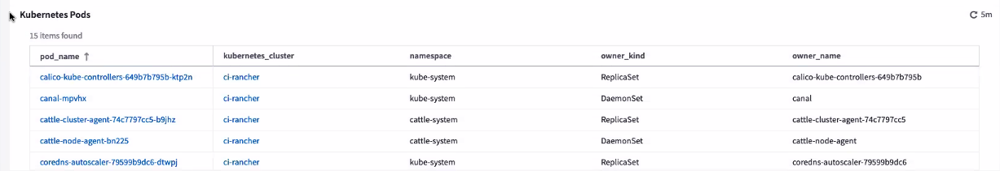
Updates Für Data Collector
-
ECS meldet jetzt Firmware für Speicher und Knoten
-
Isilon hat eine verbesserte Problemerkennung verbessert
-
Azure NetApp Files erfasst Performance-Daten schneller
-
StorageGRID unterstützt jetzt Single Sign On (SSO).
-
Brocade CLI meldet ordnungsgemäß das Modell für X&-4
Weitere Betriebssysteme werden unterstützt
Die Cloud Insights-Erfassungseinheit unterstützt zusätzlich zu den bereits unterstützten Betriebssystemen die folgenden Betriebssysteme:
-
CentOS (64 Bit) 8.4
-
Oracle Enterprise Linux (64 Bit) 8.4
-
Red hat Enterprise Linux (64-Bit) 8.4
Oktober 2021
Filter auf K8S Explorer-Seiten
"Kubernetes Explorer" Mit Seitenfiltern können Sie die angezeigten Daten für Ihre Kubernetes-Cluster, Nodes und POD-Exploration im Fokus haben.

K8s-Daten für die Berichterstellung
Kubernetes-Daten können jetzt in Reporting verwendet werden. Damit können Sie Chargeback oder andere Berichte erstellen. Damit Kubernetes-Kostenzuordnungsdaten an die Berichterstellung weitergeleitet werden können, ist eine aktive Verbindung zu erforderlich. Cloud Insights muss Daten von Ihrem Kubernetes-Cluster und dem Back-End-Storage erhalten. Wenn vom Back-End-Storage keine Daten empfangen werden, kann Cloud Insights Kubernetes-Objektdaten nicht an die Berichterstellung senden.

Dunkles Thema ist angekommen
Viele von euch baten um ein dunkles Thema, und Cloud Insights hat geantwortet. Um zwischen hellen und dunklen Themen zu wechseln, klicken Sie auf das Dropdown-Menü neben Ihrem Benutzernamen.

Data Collector-Unterstützung
Wir haben einige Verbesserungen bei Cloud Insights-Datensammlern vorgenommen. Hier einige Highlights:
-
Neuer Kollektor für Amazon FSX für ONTAP
September 2021
Performancerichtlinien werden jetzt überwacht
Überwachung und Warnmeldungen haben Performance-Richtlinien und Verstöße im gesamten Cloud Insights ersetzt. "Warnfunktionen mit Monitoren" Sie erhalten mehr Flexibilität und einen besseren Einblick in potenzielle Probleme oder Trends in Ihrer Umgebung.
Automatische Fertigstellung von Vorschlägen, Wildcards und Ausdrücken in Monitoren
Wenn Sie einen Monitor für Warnungen erstellen, ist das Eingeben eines Filters jetzt vorausschauend, damit Sie ganz einfach nach Metriken oder Attributen Ihres Monitors suchen und diese finden können. Zusätzlich haben Sie die Möglichkeit, basierend auf dem von Ihnen angegebenen Text einen Platzhalter-Filter zu erstellen.

Telegraf Agent Aktualisiert
Der Agent für die Aufnahme von telegraf-Integrationsdaten wurde auf Version 1.19.3 aktualisiert, mit Verbesserungen bei Leistung und Sicherheit. Benutzer, die eine Aktualisierung durchführen möchten, können sich im entsprechenden Abschnitt zur Aktualisierung des s informieren "Agenteninstallation" Dokumentation. Frühere Versionen des Agenten funktionieren weiterhin, ohne dass eine Benutzeraktion erforderlich ist.
Data Collector-Unterstützung
Wir haben einige Verbesserungen bei Cloud Insights-Datensammlern vorgenommen. Hier einige Highlights:
-
Microsoft Hyper-V Collector verwendet jetzt PowerShell statt WMI
-
Azure VMs und VHD Collector sind nun bis zu 10-mal schneller, da parallele Anrufe auch möglich sind
-
HPE Nimble unterstützt jetzt föderierte und iSCSI-Konfigurationen
Und da wir immer verbessern Datensammlung, hier sind einige andere neue Änderungen der Anmerkung:
-
Neuer Collector für EMC PowerStore
-
Neuer Collector für Hitachi Ops Center
-
Neuer Collector für Hitachi Content Platform
-
Erweiterter ONTAP Collector zur Erstellung von Fabric Pools
-
Verbesserter ANF mit Storage-Pool und Volume-Performance
-
Erweitertes EMC ECS mit Speicherknoten und Speicherleistung sowie der Objektanzahl in Buckets
-
Verbesserte EMC Isilon mit Storage-Knoten und Qtree-Kennzahlen
-
Verbessertes EMC Symetrix mit Volume-QOS-Limits
-
Verbesserte IBM SVC und EMC PowerStore mit der übergeordneten Seriennummer der Speicherknoten
August 2021
Neue Benutzeroberfläche Der Überwachungsseite
Der "Audit-Seite" Bietet eine übersichtlichere Schnittstelle und ermöglicht jetzt den Export von Audit-Ereignissen in .CSV-Datei.
Verbessertes Benutzerrollenmanagement
Cloud Insights bietet jetzt noch mehr Freiheit beim Zuweisen von Benutzerrollen und Zugriffskontrollen. Benutzern können nun granulare Berechtigungen für Monitoring, Berichterstellung und Cloud Secure separat zugewiesen werden.
Das bedeutet, dass Sie mehr Benutzern administrativen Zugriff auf Monitoring-, Optimierungs- und Reporting-Funktionen gewähren und gleichzeitig den Zugriff auf Ihre sensiblen Cloud Secure Audit- und Aktivitätsdaten nur auf diejenigen beschränken können, die sie benötigen.
"Erfahren Sie mehr darüber" Über die verschiedenen Zugriffsebenen in der Cloud Insights-Dokumentation.
Juni 2021
Machen Sie Vorschläge, Wildcards und Ausdrücke in Filtern automatisch fertig
Mit dieser Version von Cloud Insights müssen Sie nicht mehr alle möglichen Namen und Werte kennen, nach denen Sie in einer Abfrage oder einem Widget filtern können. Beim Filtern können Sie einfach mit der Eingabe beginnen, und Cloud Insights schlägt Werte basierend auf Ihrem Text vor. Nicht mehr im Voraus nach Anwendungsnamen oder Kubernetes-Attributen suchen, nur um diejenigen zu finden, die in Ihrem Widget angezeigt werden sollen.
Wenn Sie einen Filter eingeben, zeigt der Filter eine intelligente Ergebnisliste an, aus der Sie auswählen können, sowie die Option, basierend auf dem aktuellen Text einen Platzhalterfilter zu erstellen. Wenn Sie diese Option auswählen, werden alle Ergebnisse angezeigt, die dem Platzhalterausdruck entsprechen. Sie können natürlich auch mehrere einzelne Werte auswählen, die Sie dem Filter hinzufügen möchten.

Zusätzlich können Sie Expressions in einem Filter mit NOT oder oder erstellen, oder Sie können die Option "Keine" auswählen, um nach Null-Werten im Feld zu filtern.
Weitere Informationen "Filteroptionen" In Abfragen und Widgets.
APIs von Edition erhältlich
Die leistungsstarken APIs von Cloud Insights sind besser zugänglich als je zuvor. Alerts APIs sind jetzt in Standard- und Premium-Editionen verfügbar. Für jede Edition stehen folgende APIs zur Verfügung:
| API-Kategorie | Basic | Standard | Premium |
|---|---|---|---|
Erfassungseinheit |
|||
Datenerfassung |
|||
Meldungen |
|||
Ressourcen |
|||
Datenaufnahme |
Sichtbarkeit durch Kubernetes PV und Pod
Cloud Insights bietet einen Einblick in den Back-End Storage für Ihre Kubernetes-Umgebungen und gibt Ihnen einen Einblick in die Kubernetes Pods und PVS (Persistent Volumes). Sie können nun PV-Zähler wie IOPS, Latenz und Durchsatz von der Nutzung eines einzelnen Pods über einen PV-Zähler zu einem PV und bis zum Back-End-Speichergerät verfolgen.
Auf einer Landing Page des Volume oder des internen Volume werden zwei neue Tabellen angezeigt:


Um die Vorteile dieser neuen Tabellen zu nutzen, wird empfohlen, Ihren aktuellen Kubernetes Agent zu deinstallieren und neu zu installieren. Sie müssen auch Kube-State-Metrics Version 2.1.0 oder höher installieren.
Kubernetes Node zu VM-Links
Sie können jetzt auf einer Kubernetes Node-Seite klicken, um die VM-Seite des Node zu öffnen. Die VM-Seite enthält auch einen Link zurück zum Node selbst.


Warnmeldungsüberwachung Ersetzen von Leistungsrichtlinien
Um die zusätzlichen Vorteile mehrerer Schwellenwerte, Webhook- und E-Mail-Alarmauslieferung, Warnungen auf allen Kennzahlen über eine einzige Schnittstelle zu ermöglichen, wird Cloud Insights in den Monaten Juli und August 2021 Standard- und Premium Edition-Kunden von Leistungsrichtlinien in Monitore konvertieren. Weitere Informationen zu "Meldungen und Monitoring", Und bleiben Sie auf diesem spannenden Wandel abgestimmt.
Cloud Secure unterstützt NFS
Cloud Secure unterstützt jetzt die Datenerfassung per NFS für ONTAP. Schützen Sie Ihre Daten vor Ransomware-Angriffen durch SMB- und NFS-Benutzerzugriff. Darüber hinaus unterstützt Cloud Secure Active-Directory- und LDAP-Benutzerverzeichnisse zur Erfassung von NFS-Benutzerattributen.
Löschen von Cloud Secure Snapshots
Cloud Secure löscht automatisch Snapshots auf Basis der Einstellungen zum Löschen von Snapshots. So wird Speicherplatz eingespart und die Notwendigkeit zum manuellen Löschen von Snapshots verringert.

Geschwindigkeit der Cloud Secure Datenerfassung
Ein einzelnes Datensammler-Agent-System kann jetzt bis zu 20,000 Ereignisse pro Sekunde auf Cloud Secure posten.
Mai 2021
Im Folgenden einige Änderungen, die wir im April vorgenommen haben:
Telegraf Agent Aktualisiert
Der Agent für die Aufnahme von telegraf-Integrationsdaten wurde auf Version 1.17.3 aktualisiert, mit Verbesserungen bei Leistung und Sicherheit. Benutzer, die eine Aktualisierung durchführen möchten, können sich im entsprechenden Abschnitt zur Aktualisierung des s informieren "Agenteninstallation" Dokumentation. Frühere Versionen des Agenten funktionieren weiterhin, ohne dass eine Benutzeraktion erforderlich ist.
Fügen Sie Korrekturmaßnahmen zu einem Alarm hinzu
Sie können jetzt eine optionale Beschreibung sowie zusätzliche Erkenntnisse und/oder Korrekturmaßnahmen hinzufügen, wenn Sie einen Monitor erstellen oder ändern, indem Sie den Abschnitt Alarmbeschreibung hinzufügen ausfüllen. Die Beschreibung wird mit der Warnmeldung gesendet. Das Feld insights and Corrective Actions enthält ausführliche Schritte und Anleitungen zum Umgang mit Warnmeldungen und wird im Übersichtsbereich der Landing Page für Meldungen angezeigt.
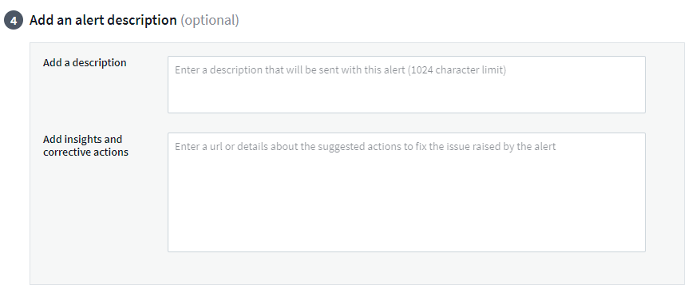
Cloud Insights APIs für alle Editionen
API-Zugriff ist jetzt in allen Editionen von Cloud Insights verfügbar. Benutzer der Basic Edition können nun Aktionen für Erfassungseinheiten und Datensammler automatisieren, und Standard Edition Benutzer können Metriken abfragen und benutzerdefinierte Metriken erfassen. Die Premium Edition ermöglicht weiterhin die vollständige Nutzung aller API-Kategorien.
| API-Kategorie | Basic | Standard | Premium |
|---|---|---|---|
Erfassungseinheit |
|||
Datenerfassung |
|||
Ressourcen |
|||
Datenaufnahme |
|||
Data Warehouse |
Details zur API-Verwendung finden Sie im "API-Dokumentation".
April 2021
Einfachere Verwaltung von Monitoren
"Gruppierung Überwachen" Vereinfacht das Management von Monitoren in Ihrer Umgebung. Mehrere Monitore können jetzt zusammengefasst und als einen angehalten werden. Wenn beispielsweise ein Update zu einem Infrastruktur-Stack stattfindet, können Sie Warnmeldungen von allen diesen Geräten mit nur einem Klick unterbrechen.
Monitoring-Gruppen sind der erste Teil einer aufregenden neuen Funktion, die eine verbesserte Verwaltung von ONTAP-Geräten in Cloud Insights ermöglicht.

Erweiterte Alarmoptionen Mit Webhooks
Viele kommerzielle Anwendungen unterstützen "Webhaken" Als Standard-Eingangsschnittstelle. Cloud Insights unterstützt jetzt viele dieser Bereitstellungskanäle und stellt Standardvorlagen für Slack, PagerDuty, Teams und Discord zur Verfügung. Außerdem bietet er anpassbare generische Webhooks zur Unterstützung vieler anderer Anwendungen.

Verbesserte Geräteerkennung
Zur Verbesserung von Überwachung und Fehlerbehebung sowie zur Bereitstellung von präzisen Berichten ist es hilfreich, die Namen von Geräten zu verstehen und nicht ihre IP-Adressen oder andere Kennungen. Cloud Insights bietet jetzt eine automatische Möglichkeit, die Namen von Storage und physischen Hostgeräten in der Umgebung mit einem regelbasierten Ansatz zu identifizieren "* Geräteauflösung*", Im Menü * Verwalten* verfügbar.
Sie baten um mehr!
Eine beliebte Frage von Kunden war, dass es mehr Standardoptionen zur Visualisierung des Datenbereichs gibt. Daher haben wir die folgenden fünf neuen Optionen hinzugefügt, die nun über den Zeitbereich Picker im gesamten Service verfügbar sind:
-
Letzte 30 Minuten
-
Die Letzten 2 Stunden
-
Letzte 6 Stunden
-
Letzte 12 Stunden
-
Letzte 2 Tage
Mehrere Abonnements in einer Cloud Insights-Umgebung
Ab dem 2. April unterstützt Cloud Insights für einen Kunden in einer einzelnen Cloud Insights-Instanz mehrere Abonnements desselben Edition-Typs. Kunden können so Teile ihres Cloud Insights Abonnements mit einem Infrastrukturkauf teilen. Wenden Sie sich an den NetApp Vertrieb, wenn Sie Unterstützung bei mehreren Abonnements benötigen.
Wählen Sie Ihren Pfad
Beim Einrichten von Cloud Insights können Sie nun entscheiden, ob Sie mit Monitoring und Alerting oder Ransomware und Insider Threat Detection beginnen möchten. Cloud Insights konfiguriert die Startumgebung auf der Grundlage des von Ihnen gewählten Pfads. Sie können den anderen Pfad jederzeit danach konfigurieren.
Einfachere Integration In Cloud Secure
Und der Einstieg in Cloud Secure ist leichter denn je, mit einer neuen Schritt-für-Schritt-Setup-Checkliste.

Wie immer hören wir gerne Ihre Vorschläge! Senden Sie sie an ng-cloudinsights-customerfeedback@netapp.com.
Februar 2021
Telegraf Agent Aktualisiert
Der Agent für die Aufnahme von telegraf-Integrationsdaten wurde auf Version 1.17.0 aktualisiert, die Schwachstellen und Fehlerbehebungen umfasst.
Cloud Cost Analyse
Erleben Sie die Leistung von Spot by NetApp mit Cloud Cost, die detailliert beschrieben wird "Kostenanalyse" Der Vergangenheit, der Gegenwart und der geschätzten Ausgaben – sorgen für Transparenz der Cloud-Nutzung in Ihrer Umgebung. Die Cloud-Kostenkonsole bietet eine detaillierte Übersicht über die Cloud-Ausgaben und detaillierte Informationen zu einzelnen Workloads, Konten und Services.
Die Cloud-Kosten können die folgenden großen Herausforderungen bewältigen:
-
Nachverfolgung und Überwachung Ihrer Cloud-Kosten
-
Identifizierung von Abfall- und potenziellen Optimierungsbereichen
-
Ausführbare Aktionselemente werden bereitgestellt
Cloud-Kosten konzentrieren sich auf Monitoring. Führen Sie ein Upgrade von NetApp Account an Spot durch, um automatische Kostenersparnisse und die Umgebung zu optimieren.
Abfrage nach Objekten mit Null-Werten unter Verwendung von Filtern
Cloud Insights ermöglicht jetzt die Suche nach Attributen und Metriken mit Null/keine Werten durch die Verwendung von Filtern. Sie können diese Filterung für alle Attribute/Metriken an folgenden Stellen durchführen:
-
Auf der Seite Abfrage
-
In Dashboard-Widgets und Seitenvariablen
-
Auf der Liste „Meldungen“
-
Beim Erstellen von Monitoren
Um nach Null/keine Werten zu filtern, wählen Sie einfach die Option Keine aus, wenn sie im entsprechenden Filter-Dropdown angezeigt wird.

Unterstützung In Mehreren Regionen
Ab heute bieten wir den Cloud Insights-Service in verschiedenen Regionen weltweit an, der für mehr Performance und mehr Sicherheit für Kunden außerhalb der USA sorgt. Cloud Insights/Cloud Secure speichert Informationen je nach Region, in der Ihre Umgebung erstellt wird.
Klicken Sie Auf "Hier" Finden Sie weitere Informationen.
Januar 2021
Zusätzliche ONTAP-Kennzahlen umbenannt
Im Rahmen unserer kontinuierlichen Bemühungen, die Effizienz des Datenerfassens aus ONTAP Systemen zu verbessern, wurden die folgenden ONTAP-Kennzahlen umbenannt.
Wenn Sie über vorhandene Dashboard-Widgets oder Abfragen mit einer dieser Kennzahlen verfügen, müssen Sie diese bearbeiten oder neu erstellen, um die neuen metrischen Namen verwenden zu können.
| Vorheriger Metrischer Name | Neuer Metrischer Name |
|---|---|
netapp_ontap.Disk_conentkomponente.total_Transfers |
netapp_ontap.Disk_constituto.total_iops |
netapp_ontap.Disk.total_Transfers |
netapp_ontap.Disk.total_iops |
netapp_ontap.fcp_lif.read_Data |
netapp_ontap.fcp_lif.read_Throughput |
netapp_ontap.fcp_lif.write_Data |
netapp_ontap.fcp_lif.write_Throughput |
netapp_ontap.iscsi_lif.read_Data |
netapp_ontap.iscsi_lif.read_Throughput |
netapp_ontap.iscsi_lif.write_Data |
netapp_ontap.iscsi_lif.write_Throughput |
netapp_ontap.lif.recv_Data |
netapp_ontap.lif.recv_Throughput |
netapp_ontap.lif.sent_data |
netapp_ontap.lif.sent_throughput |
netapp_ontap.lun.read_Data |
netapp_ontap.lun.read_Throughput |
netapp_ontap.lun.write_Data |
netapp_ontap.lun.Write_Throughput |
netapp_ontap.nic_common.rx_Byte |
netapp_ontap.nic_common.rx_Throughput |
netapp_ontap.nic_common.tx_Bytes |
netapp_ontap.nic_common.tx_Throughput |
netapp_ontap.path.read_Data |
netapp_ontap.path.read_Throughput |
netapp_ontap.path.write_Data |
netapp_ontap.path.write_Throughput |
netapp_ontap.path.total_Data |
netapp_ontap.path.total_Throughput |
netapp_ontap.Policy_Group.read_Data |
netapp_ontap.Policy_Group.read_Throughput |
netapp_ontap.Policy_Group.write_Data |
netapp_ontap.Policy_Group.write_Throughput |
netapp_ontap.Policy_Group.other_Data |
netapp_ontap.Policy_Group.other_Throughput |
netapp_ontap.Policy_Group.total_Data |
netapp_ontap.Policy_Group.total_Throughput |
netapp_ontap.System_Node.Disk_Data_read |
netapp_ontap.System_Node.Disk_Throughput_read |
netapp_ontap.System_Node.Disk_Data_written |
netapp_ontap.System_Node.Disk_Throughput_written |
netapp_ontap.System_Node.hdd_Data_read |
netapp_ontap.System_Node.hdd_Throughput_read |
netapp_ontap.System_Node.hdd_Data_written |
netapp_ontap.System_Node.hdd_Throughput_written |
netapp_ontap.System_Node.ssd_Data_read |
netapp_ontap.System_Node.ssd_Throughput_read |
netapp_ontap.System_Node.ssd_Data_written |
netapp_ontap.System_Node.ssd_Throughput_written |
netapp_ontap.system_node.net_data_recv |
netapp_ontap.system_node.net_throughput_recv |
netapp_ontap.system_node.net_data_sent |
netapp_ontap.system_node.net_throughput_sent |
netapp_ontap.System_Node.fcp_Data_rev |
netapp_ontap.System_Node.fcp_Throughput_recv |
netapp_ontap.System_Node.fcp_Data_sent |
netapp_ontap.System_Node.fcp_Throughput_sent |
netapp_ontap.Volume_Node.cifs_read_Data |
netapp_ontap.Volume_Node.cifs_read_Throughput |
netapp_ontap.Volume_Node.cifs_write_Data |
netapp_ontap.Volume_Node.cifs_write_Throughput |
netapp_ontap.Volume_Node.nfs_read_Data |
netapp_ontap.Volume_Node.nfs_read_Throughput |
netapp_ontap.Volume_Node.nfs_write_Data |
netapp_ontap.Volume_Node.nfs_Write_Throughput |
netapp_ontap.Volume_Node.iscsi_read_Data |
netapp_ontap.Volume_Node.iscsi_read_Throughput |
netapp_ontap.Volume_Node.iscsi_write_Data |
netapp_ontap.Volume_Node.iscsi_Write_Throughput |
netapp_ontap.Volume_Node.fcp_read_Data |
netapp_ontap.Volume_Node.fcp_read_Throughput |
netapp_ontap.Volume_Node.fcp_write_Data |
netapp_ontap.Volume_Node.fcp_Write_Throughput |
netapp_ontap.Volume.read_Data |
netapp_ontap.Volume.read_Throughput |
netapp_ontap.Volume.write_Data |
netapp_ontap.Volume.write_Throughput |
netapp_ontap.Workload.read_Data |
netapp_ontap.Workload.read_Throughput |
netapp_ontap.Workload.write_Data |
netapp_ontap.Workload.Write_Throughput |
netapp_ontap.Workload_Volume.read_Data |
netapp_ontap.Workload_Volume.read_Throughput |
netapp_ontap.Workload_Volume.write_Data |
netapp_ontap.Workload_Volume.write_Throughput |
Neuer Kubernetes Explorer
Der "Kubernetes Explorer" Bietet eine einfache Topologieansicht von Kubernetes-Clustern. So können selbst nicht-Experten Probleme und Abhängigkeiten schnell erkennen – von der Cluster-Ebene bis hin zu Container und Storage.
Mithilfe der Drill-Down-Details des Kubernetes Explorers können Sie zahlreiche Informationen zu Status, Verwendung und Zustand der Cluster, Nodes, Pods, Container und Storage in Ihrer Kubernetes-Umgebung untersuchen.

Dezember 2020
Vereinfachte Kubernetes-Installation
Die Installation von Kubernetes Agent wurde optimiert, damit weniger Benutzerinteraktionen erforderlich sind. "Installieren des Kubernetes Agent" Umfasst jetzt die Kubernetes-Datenerfassung.
November 2020
Zusätzliche Dashboards
Die folgenden neuen Dashboards auf ONTAP wurden in die Galerie hinzugefügt und sind für den Import verfügbar:
-
ONTAP: Aggregierte Performance und Kapazität
-
ONTAP FAS/AFF – Kapazitätsauslastung
-
ONTAP FAS/All Flash FAS – Cluster-Kapazität
-
ONTAP FAS/ALL FLASH FAS – EFFIZIENZ
-
ONTAP FAS/All Flash FAS – FlexVol-Performance
-
ONTAP FAS/All Flash FAS – betriebliche/optimale Node-Punkte
-
ONTAP FAS/All Flash FAS: Kapazitätseffizienz in Vorbereitung auf den Beitrag
-
ONTAP: Netzwerkanschlussaktivität
-
ONTAP: Performance der Node-Protokolle
-
ONTAP: Node-Workload-Performance (Frontend)
-
ONTAP: Prozessor
-
ONTAP: SVM Workload-Performance (Frontend)
-
ONTAP: Volume Workload Performance (Frontend)
Spaltenumbenennung in TabellenWidgets
Sie können Spalten im Abschnitt „Metrics and Attributes“ eines Tabellenwidgets umbenennen, indem Sie das Widget im Bearbeitungsmodus öffnen und oben in der Spalte auf das Menü klicken. Geben Sie den neuen Namen ein und klicken Sie auf Save, oder klicken Sie auf Reset, um die Spalte wieder auf den ursprünglichen Namen zu setzen.
Beachten Sie, dass sich dies nur auf den Anzeigenamen der Spalte im TabellenWidget auswirkt; der Name der Metrik/des Attributs ändert sich nicht in den zugrunde liegenden Daten selbst.
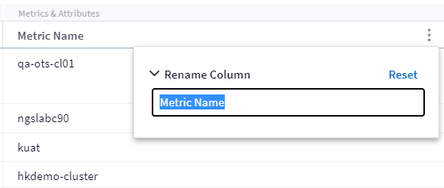
Oktober 2020
Standardmäßige Erweiterung der Integrationsdaten
Durch die Gruppierung von Tabellen-Widget können jetzt Standarderweiterungen für Kubernetes, erweiterte ONTAP-Daten und Agent-Node-Metriken vorgenommen werden. Wenn Sie beispielsweise Kubernetes Nodes von Cluster gruppieren, wird für jeden Cluster eine Zeile in der Tabelle angezeigt. Anschließend könnten Sie jede Cluster-Zeile erweitern, um eine Liste der Node-Objekte anzuzeigen.
Basic Edition: Technischer Support
Der technische Support steht ab sofort für Abonnenten der Cloud Insights Basic Edition sowie der Standard- und Premium-Editionen zur Verfügung. Darüber hinaus hat Cloud Insights den Workflow zur Erstellung eines NetApp Support-Tickets vereinfacht.
Öffentliche API von Cloud Secure
Cloud Secure unterstützt "Rest-APIs" Für den Zugriff auf Informationen zu Aktivitäten und Warnmeldungen. Dies geschieht mithilfe von API-Zugriffstoken, die über die Cloud Secure Admin-Benutzeroberfläche erstellt wurden und dann für den Zugriff auf DIE REST-APIs verwendet werden. Die Swagger-Dokumentation für diese REST-APIs ist in Cloud Secure integriert.
September 2020
Seite mit Integrationsdaten abfragen
Die Seite „Cloud Insights Query“ unterstützt Integrationsdaten (z. B. von Kubernetes, erweiterten ONTAP Metriken usw.). Beim Arbeiten mit Integrationsdaten zeigt die Ergebnistabelle der Abfrage eine Ansicht „Split-Screen“ mit Objekt/Gruppierung auf der linken Seite und Objektdaten (Attribute/Metriken) auf der rechten Seite an. Sie können auch mehrere Attribute für die Gruppierung von Integrationsdaten auswählen.

Formatierung der Einheitenanzeige in TabellenWidget
Die Formatierung der Anzeige von Einheiten ist jetzt in den TabellenWidgets für Spalten verfügbar, in denen metrische/Zählerdaten angezeigt werden (z. B. Gigabyte, MB/Sekunde usw.). Um die Anzeigeeinheit einer Metrik zu ändern, klicken Sie in der Spaltenüberschrift auf das Menü „drei Punkte“ und wählen Sie „Anzeige der Einheit“. Sie können aus einer der verfügbaren Einheiten wählen. Die verfügbaren Einheiten variieren je nach Art der metrischen Daten in der Anzeigesäule.

Detailseite Der Erfassungseinheit
Akquisitionseinheiten verfügen nun über eine eigene Landing Page, die Ihnen nützliche Details für jede AU sowie Informationen zur Fehlerbehebung bietet. Der "AU Detailseite" Enthält Links zu Datensammlern der AU sowie hilfreiche Statusinformationen.
Die Abhängigkeit Von Cloud Secure Docker Wurde Entfernt
Die Abhängigkeit von Docker von Cloud Secure wurde entfernt. Docker wird für die Installation des Cloud Secure Agent nicht mehr benötigt.
Benutzerrollen Melden
Wenn Sie über Cloud Insights Premium Edition mit Reporting verfügen, verfügt jeder Cloud Insights-Benutzer in Ihrer Umgebung auch über eine SSO-Anmeldung bei der Reporting-Anwendung (d. h. Cognos); durch Klicken auf den Link Berichte im Menü werden sie automatisch bei Reporting angemeldet.
Die Benutzerrolle in Cloud Insights legt ihre fest "Benutzerrolle für die Berichterstellung":
Cloud Insights Rolle |
Berichtsrolle |
Reporting-Berechtigungen |
Gast |
Verbraucher |
Es können Berichte angezeigt, geplant und erstellt sowie persönliche Einstellungen wie z. B. für Sprachen und Zeitzonen festgelegt werden. Verbraucher können keine Berichte erstellen oder administrative Aufgaben ausführen. |
Benutzer |
Autor |
Kann alle Funktionen des Verbrauchers ausführen sowie Berichte und Dashboards erstellen und verwalten. |
Verwalter |
Verwalter |
Kann alle Author-Funktionen sowie alle administrativen Aufgaben wie die Konfiguration von Berichten und das Herunterfahren und Neustarten von Reporting-Aufgaben ausführen. |
|
|
Cloud Insights-Berichte sind für Umgebungen mit mindestens 500 MUs verfügbar. |

|
Wenn Sie bereits Kunde von Premium Edition sind und Ihre Berichte behalten möchten, lesen Sie dies "Wichtiger Hinweis für Bestandskunden". |
Neue API-Kategorie für die Datenaufnahme
Cloud Insights hat eine API-Kategorie mit Datenaufnahme hinzugefügt, die Ihnen eine bessere Kontrolle über benutzerdefinierte Daten und Agenten ermöglicht. Detaillierte Dokumentation zu dieser und anderen API-Kategorien finden Sie in Cloud Insights, indem Sie zu Admin > API Access navigieren und auf den Link API Documentation klicken. Sie können auch einen Kommentar an die AU im Feld Notiz anhängen, das auf der AU Detailseite sowie auf der AU-Listenseite angezeigt wird.
August 2020
Monitoring und Alarmfunktionen
Neben der derzeit festgelegten Performance-Richtlinien für Storage-Objekte, VMs, EC2 und Ports bietet Cloud Insights Standard Edition jetzt auch die Möglichkeit zur "Konfigurieren von Monitoren" Für Schwellenwerte über Integrationsdaten für Kubernetes, erweiterte Kennzahlen von ONTAP und Telegraf-Plug-ins. Sie erstellen einfach einen Monitor für jede Objektmetrik, die Sie Warnmeldungen auslösen, die Bedingungen für Schwellenwerte auf Warn- oder kritischen Ebene festlegen und die gewünschten E-Mail-Empfänger für jede Stufe angeben. Das können Sie dann "Anzeigen und Verwalten von Warnmeldungen" Um Trends zu verfolgen oder Probleme zu beheben.

Juli 2020
Cloud Secure Snapshot Aktion starten
Cloud Secure schützt Ihre Daten, indem bei der Erkennung schädlicher Aktivitäten automatisch Snapshots erstellt werden. So wird sichergestellt, dass Ihre Daten sicher gesichert werden.
Sie können automatisierte Antwortrichtlinien festlegen, die einen Snapshot erstellen, wenn Ransomware-Angriff oder andere anormale Benutzeraktivitäten erkannt werden. Sie können einen Snapshot auch manuell von der Warnungsseite aus erstellen.
Automatische Momentaufnahme:
Manuelle Momentaufnahme:
Aktualisierungen von Metrik/Zählzahlen
Die folgenden Kapazitätszähler sind für die Verwendung in der Cloud Insights-UI und DER REST-API verfügbar. Bisher waren diese Zähler nur für das Data Warehouse / Reporting verfügbar.
| Objekttyp | Zähler |
|---|---|
Storage |
Kapazität - Spare Raw Capacity - Failed Raw |
Storage-Pool |
Datenkapazität - Genutzte Datenkapazität - Gesamte Sonstige Kapazität - Genutzte Sonstige Kapazität - Gesamtkapazität - Rohkapazität - Weiche Grenze |
Internes Volumen |
Datenkapazität - Verwendete Datenkapazität - Gesamte Sonstige Kapazität - Genutzte Andere Kapazität - Insgesamt Eingesparte Clone-Kapazität - Summe |
Cloud Secure-Erkennung Potenzieller Angriffe
Cloud Secure erkennt jetzt potenzielle Angriffe wie Ransomware. Klicken Sie auf der Listenseite Meldungen auf eine Warnmeldung, um eine Detailseite mit den folgenden Informationen zu öffnen:
-
Zeitpunkt des Angriffs
-
Zugeordnete Benutzer- und Dateiaktivitäten
-
Maßnahmen ergriffen
-
Weitere Informationen, die Ihnen helfen, mögliche Sicherheitsverstöße nachzuverfolgen
Warneseite mit potenziellen Ransomware-Angriffen:
Detailseite zu potenziellen Ransomware-Angriffen:
Abonnieren Sie Premium Edition über AWS
Können Sie während der Testversion von Cloud Insights "Self-Subscribe" AWS Marketplace für Cloud Insights Standard Edition oder Premium Edition. Bisher war es nur möglich, sich über AWS Marketplace eigenständig für Standard Edition anzumelden.
Erweitertes Tabellenwidget
Das Widget „Dashboard/Asset Page Table“ umfasst die folgenden Verbesserungen:
-
Ansicht "Split-Screen": Tabelle Widgets zeigen das Objekt/die Gruppierung auf der linken Seite und die Objektdaten (Attribute/Metriken) auf der rechten Seite an.

-
Gruppierung mehrerer Attribute: Für Integrationsdaten (Kubernetes, ONTAP Advanced Metrics, Docker usw.) können mehrere Attribute zur Gruppierung ausgewählt werden. Die Daten werden entsprechend den Gruppierungsattributen angezeigt/ausgewählt.
Gruppierung mit Integrationsdaten (dargestellt im Bearbeitungsmodus):

-
Die Gruppierung von Infrastrukturdaten (Storage, EC2, VM, Ports usw.) erfolgt wie zuvor durch ein einzelnes Attribut. Wenn Sie nach einem Attribut gruppieren, das nicht das Objekt ist, können Sie in der Tabelle die Gruppenzeile erweitern, um alle Objekte in der Gruppe anzuzeigen.
Gruppierung mit Infrastrukturdaten (im Anzeigemodus angezeigt):
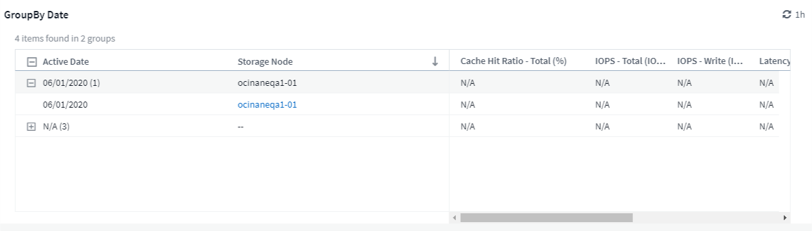
Filtern Von Metriken
Neben der Filterung von Objektattributen in einem Widget können Sie jetzt auch nach Metriken filtern.

Beim Arbeiten mit Integrationsdaten (Kubernetes, erweiterte ONTAP Daten usw.) werden durch Metrikfilterung die einzelnen/nicht Punkte der aufgezeichneten Datenreihe entfernt, im Gegensatz zu Infrastrukturdaten (Storage, VM, Ports usw.). Dort arbeiten Filter am aggregierten Wert der Datenserie und entfernen das gesamte Objekt aus dem Diagramm.

ONTAP Advanced Counter Data
Cloud Insights nutzt die ONTAP-spezifischen Advanced Counter Data von NetApp, die über eine Vielzahl von Zählern und Kennzahlen von ONTAP-Geräten erfasst werden. ONTAP Advanced Counter Data steht allen NetApp ONTAP Kunden zur Verfügung. Diese Kennzahlen ermöglichen eine individuelle und breit gefächerte Visualisierung in Cloud Insights Widgets und Dashboards.
ONTAP Advanced Counters finden Sie, indem Sie in der Widgets Abfrage nach „netapp_ontap“ suchen und zwischen den Zählern auswählen.

Sie können Ihre Suche verfeinern, indem Sie zusätzliche Teile des Zählernamens eingeben. Beispiel:
-
Lif
-
Aggregat
-
Offbox_vscan_Server
-
Und vieles mehr


Bitte beachten Sie Folgendes:
-
Die erweiterte Datensammlung wird standardmäßig für neue ONTAP-Datensammler aktiviert. Um die erweiterte Datensammlung für Ihre vorhandenen ONTAP-Datensammler zu aktivieren, bearbeiten Sie den Datensammler und erweitern Sie den Abschnitt Erweiterte Konfiguration.
-
Die erweiterte Datenerfassung ist für ONTAP im 7-Mode nicht verfügbar.
Moderne Counter-Dashboards
Cloud Insights verfügt über eine Vielzahl an vordefinierten Dashboards, um Ihnen die Visualisierung erweiterter ONTAP-Zähler für Themen wie Aggregate Performance, Volume Workload, Processor Activity usw. zu erleichtern. Wenn mindestens ein ONTAP-Datensammler konfiguriert ist, können diese aus der Dashboard-Galerie auf einer beliebigen Dashboard-Listenseite importiert werden.
Weitere Informationen
Weitere Informationen zu erweiterten ONTAP Daten finden Sie unter folgenden Links:
-
https://mysupport.netapp.com/site/tools/tool-eula/netapp-harvest (Hinweis: Sie müssen sich beim NetApp Support anmelden.)
Menü „Richtlinien und Verstöße“
Performancerichtlinien und -Verstöße finden Sie jetzt im Menü Alarme. Funktionen für Richtlinien und Verstöße bleiben unverändert.

Telegraf Agent Aktualisiert
Der Agent für die Aufnahme von telegraf-Integrationsdaten wurde auf aktualisiert "Version 1.14", Die Bugs Fixes, Security Fixes und neue Plug-ins beinhaltet.
Hinweis: Wenn Sie einen Kubernetes Data Collector auf der Kubernetes-Plattform konfigurieren, wird möglicherweise ein Fehler „HTTP Status 403 Forbidden“ im Protokoll angezeigt, da die Berechtigungen im Attribut „clusterrole“ nicht ausreichen.
Um dieses Problem zu umgehen, fügen Sie dem Abschnitt rules: der clusterrolle für Endpunktzugriff folgende hervorgehobene Zeilen hinzu und starten Sie dann die Telegraf-Pods neu.
rules: - apiGroups: - "" - apps - autoscaling - batch - extensions - policy - rbac.authorization.k8s.io attributeRestrictions: null resources: - nodes/metrics - nodes/proxy <== Add this line - nodes/stats - pods <== Add this line verbs: - get - list <== Add this line
Juni 2020
Vereinfachte Fehlerberichterstattung Für Data Collector
Die Meldung eines Datensammlungsfehlers ist mit der Schaltfläche Fehlerbericht senden auf der Seite Datensammler einfacher. Durch Klicken auf die Schaltfläche werden grundlegende Informationen zum Fehler an NetApp gesendet und eine Aufforderung zur Untersuchung des Problems angezeigt. Sobald Cloud Insights gedrückt wurde, bestätigt dieser NetApp eine entsprechende Benachrichtigung. Die Schaltfläche „Fehlerbericht“ ist deaktiviert, um anzugeben, dass ein Fehlerbericht für die entsprechende Datenerfassung gesendet wurde. Die Schaltfläche bleibt deaktiviert, bis die Browserseite aktualisiert wird.

Widget-Verbesserungen
Die folgenden Verbesserungen wurden in Dashboard-Widgets vorgenommen: Diese Verbesserungen gelten als Vorschau-Funktionalität und stehen möglicherweise nicht für alle Cloud Insights-Umgebungen zur Verfügung.
-
Neue Auswahl von Objekten/Kennzahlen: Objekte (Storage, Festplatte, Ports, Nodes usw.) und die zugehörigen Metriken (IOPS, Latenz, CPU-Anzahl usw.) stehen jetzt in einem Dropdown-Menü mit umfassender Suchfunktion in Widgets zur Verfügung. Im Dropdown-Menü können Sie mehrere Teilbegriffe eingeben, und Cloud Insights führt alle Objektmetriken auf, mit denen diese Begriffe erfüllt werden.

-
Gruppierung mehrerer Tags: Beim Arbeiten mit Integrationsdaten (Kubernetes, etc.) können Sie die Daten nach mehreren Tags/Attributen gruppieren. Fassen Sie beispielsweise die Speichernutzung nach Kubernetes Namespace und Container-Name zusammen.

Mai 2020
Benutzerrollen Melden
Folgende Rollen wurden für Reporting hinzugefügt:
-
Cloud Insights-Nutzer: Können Berichte ausführen und anzeigen
-
Cloud Insights-Autoren: Kann die Kundenfunktionen ausführen sowie Berichte und Dashboards erstellen und verwalten
-
Cloud Insights-Administratoren: Kann die Autorenfunktionen sowie alle administrativen Aufgaben ausführen
Cloud Secure-Updates
Cloud Insights umfasst die folgenden letzten Cloud Secure Änderungen.
Auf der Seite Forensics > Activity Forensics stellen wir zwei Ansichten zur Analyse und Untersuchung von Benutzeraktivitäten zur Verfügung:
-
Aktivitätsansicht mit Schwerpunkt auf Benutzeraktivität (welche Operation? Wo durchgeführt?)
-
Entities zeigen auf, auf welche Dateien der Benutzer zugegriffen hat.
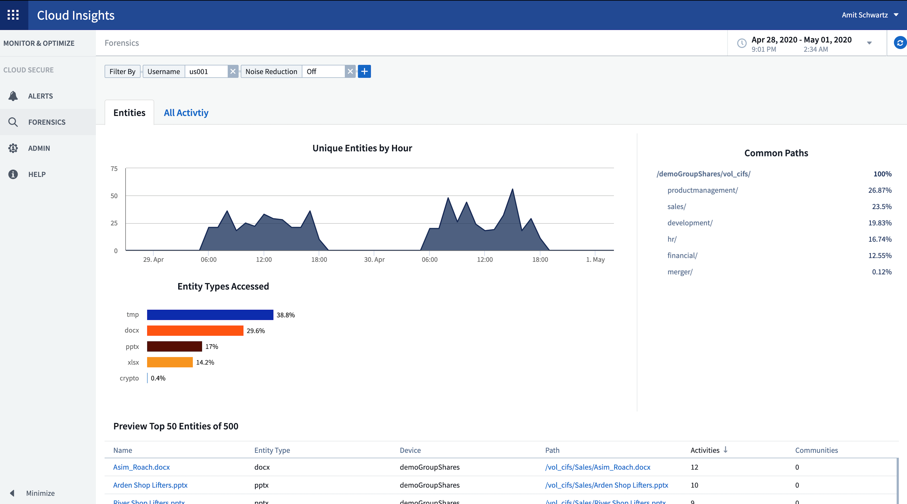
Darüber hinaus enthält die Benachrichtigung per E-Mail jetzt einen direkten Link zur Alarmseite.
Dashboard-Gruppierung
Dank der Gruppierung des Dashboards ist es besser möglich "Management von Dashboards" Die für Sie relevant sind. Sie können einer Gruppe entsprechende Dashboards für die „One-Stop“-Verwaltung von beispielsweise Ihrem Speicher oder virtuellen Maschinen hinzufügen.
Gruppen werden pro Benutzer individuell angepasst, sodass die Gruppen einer Person sich von anderen unterscheiden können. Sie können beliebig viele Gruppen mit so wenigen oder so vielen Dashboards in jeder Gruppe haben, wie Sie möchten.

Dashboard-Pinning
Sie können Dashboards anheften, sodass Favoriten immer oben in der Liste angezeigt werden.

TV-Modus und automatische Aktualisierung
"TV-Modus und automatische Aktualisierung" Anzeige von Daten nahezu in Echtzeit auf einem Dashboard oder einer Asset-Seite zulassen:
-
TV-Modus bietet ein übersichtliches Display; das Navigationsmenü ist ausgeblendet und bietet mehr Platz auf dem Bildschirm für Ihre Datenanzeige.
-
Daten in Widgets auf Dashboards und Asset Landing Pages Auto-Refresh gemäß einem Aktualisierungsintervall (alle 10 Sekunden), das vom ausgewählten Dashboard-Zeitbereich (oder Widget-Zeitbereich, falls die Dashboard-Zeit außer Kraft gesetzt wird) bestimmt wird.
Der TV-Modus und die automatische Aktualisierung sorgen für eine Live-Ansicht Ihrer Cloud Insights-Daten, die sich perfekt für eine nahtlose Vorführung oder interne Überwachung eignet.
April 2020
Neue Optionen Für Den Zeitbereich Auf Dem Dashboard
Für Dashboards und andere Cloud Insights-Seiten stehen jetzt Letzte 1 Stunde und Letzte 15 Minuten zur Auswahl.
Cloud Secure-Updates
Cloud Insights umfasst die folgenden letzten Cloud Secure Änderungen.
-
Bessere Datei- und Ordnermetadaten ändern die Erkennung, um festzustellen, ob der Benutzer die Berechtigung, den Eigentümer oder die Gruppeneigentümer geändert hat.
-
Benutzeraktivitätsbericht in CSV exportieren.
Cloud Secure überwacht und prüft alle Vorgänge für den Benutzerzugriff auf Dateien und Ordner. Durch die Prüfung von Aktivitäten können Unternehmen interne Sicherheitsrichtlinien einhalten, externe Compliance-Anforderungen wie PCI, DSGVO und HIPAA erfüllen und Verletzungen von Datensicherheitsverletzungen durchführen.
Standard-Dashboard-Zeit
Der Standardzeitbereich für Dashboards beträgt jetzt 3 Stunden statt 24 Stunden.
Optimierte Aggregationszeiten
Optimiert "Zeitaggregation" Intervalle in Zeitreihen-Widgets (Linien-, Spline-, Bereich- und gestapelte Flächendiagramme) sind häufiger für 3-Stunden- und 24-Stunden-Dashboard-/Widget-Zeitbereiche, was eine schnellere Datenaufstellung ermöglicht.
-
Der Zeitbereich von 3 Stunden optimiert bis zu einem Aggregationsintervall von 1 Minute. Vorher waren es 5 Minuten.
-
Der Zeitbereich von 24 Stunden optimiert bis zu einem 30-minütigen Aggregationsintervall. Vorher war dies 1 Stunde.
Sie können die optimierte Aggregation dennoch überschreiben, indem Sie ein benutzerdefiniertes Intervall festlegen.
Anzeige Des Automatischen Formats Der Einheit
In den meisten Widgets kennt Cloud Insights die Basiseinheit, in der Werte angezeigt werden sollen, z. B. Megabyte, Tausende, Prozentsatz, Millisekunden (ms), Usw. und jetzt "Formate werden automatisch formatiert" Das Widget zur am meisten lesbaren Einheit. Beispielsweise würde ein Datenwert von 1,234,567,890 Byte automatisch auf 1.23 Gibibyte formatiert werden. In vielen Fällen kennt Cloud Insights das beste Format für die zu erschaffenden Daten. Wenn das beste Format nicht bekannt ist oder in Widgets, in denen Sie die automatische Formatierung überschreiben möchten, können Sie das gewünschte Format auswählen.

Anmerkungen mit API importieren
Die leistungsstarke API der Cloud Insights Premium Edition bietet Ihnen jetzt Möglichkeiten "Anmerkungen importieren" Und weisen Sie sie mithilfe einer .CSV-Datei Objekten zu. Sie können auch Anwendungen importieren und Geschäftseinheiten auf die gleiche Weise zuweisen.

Einfachere Widget-Auswahl
Das Hinzufügen von Widgets zu Dashboards und Asset-Landing-Seiten ist mit einem neuen Widget-Selektor einfacher, der alle Widgets in einer einzelnen All-at-once-Ansicht anzeigt, sodass der Benutzer nicht mehr durch eine Liste von Widget-Typen scrollen muss, um das zu erweitere Widget zu finden. Verwandte Widgets sind farblich koordiniert und nach Nähe in der neuen Auswahl gruppiert.

Februar 2020
API mit Premium Edition
Die Cloud Insights Premium Edition ist mit einer Lieferung erhältlich "Leistungsstarke API" Das verwendet werden kann, um Cloud Insights in andere Anwendungen wie CMDB oder andere Ticketsysteme zu integrieren.
Detaillierte, auf Swagger basierende Informationen finden Sie unter Admin > API Acccess unter dem Link API Documentation. Swagger bietet eine kurze Beschreibung und Informationen zur Verwendung der API und ermöglicht es Ihnen, jede API in Ihrer Umgebung auszuprobieren.
Die Cloud Insights-API verwendet Zugriffstoken, um auf Zugriffsberechtigungen basierenden Zugriff auf API-Kategorien wie Z. B. RESSOURCEN oder SAMMLUNGEN zu gewähren.

Erste Abfrage nach Hinzufügen Eines Data Collectors
Zuvor, nach der Konfiguration eines neuen Datensammlers, Cloud Insights fragt den Datensammler sofort, um Inventory-Daten zu sammeln, aber würde warten, bis das konfigurierte Performance-Abfrageintervall (in der Regel 15 Minuten) erste Performance-Daten zu sammeln. Es wartete dann noch ein anderes Intervall, bevor die zweite Performance-Umfrage gestartet wurde, was bedeutete, dass es bis zu 30 Minuten dauern würde, bevor aussagekräftige Daten von einem neuen Datensammler erfasst wurden.
Datensammler "Umfrage" Wurde stark verbessert, so dass die anfängliche Performance-Umfrage unmittelbar nach der Bestandsabfrage erfolgt, wobei die zweite Performance-Umfrage innerhalb weniger Sekunden nach Abschluss der ersten Performance-Umfrage stattfindet. So kann Cloud Insights innerhalb kürzester Zeit nützliche Daten zu Dashboards und Diagrammen anzeigen.
Dieses Abfrageverhalten tritt auch nach der Bearbeitung der Konfiguration eines vorhandenen Datensammlers auf.
Vereinfachte Duplizierung Von Widget
Es ist einfacher als je zuvor, eine Kopie eines Widgets auf einem Dashboard oder auf einer Landing Page zu erstellen. Klicken Sie im Dashboard-Bearbeitungsmodus auf das Menü im Widget und wählen Sie Duplizieren. Der Widget-Editor wird gestartet, mit der ursprünglichen Widget-Konfiguration und mit einem "Kopie" Suffix im Widget-Namen ausgefüllt. Sie können ganz einfach alle erforderlichen Änderungen vornehmen und das neue Widget speichern. Das Widget wird am unteren Rand des Dashboards platziert und Sie können sie nach Bedarf positionieren. Denken Sie daran, Ihr Dashboard zu speichern, wenn alle Änderungen abgeschlossen sind.

Single Sign On (SSO)
Mit Cloud Insights Premium Edition können Administratoren * aktivieren"Single Sign On"* (SSO) Zugriff auf Cloud Insights für alle Benutzer in ihrer Unternehmensdomäne, ohne sie einzeln einladen zu müssen. Wenn SSO aktiviert ist, kann sich jeder Benutzer mit derselben Domänen-E-Mail-Adresse mithilfe seiner Unternehmensdaten bei Cloud Insights anmelden.
|
|
SSO ist nur in der Cloud Insights Premium Edition verfügbar und muss konfiguriert werden, bevor SSO für Cloud Insights aktiviert werden kann. SSO-Konfiguration umfasst "Identitätsföderation" Über NetApp Cloud Central. Mit Single Sign-On-Benutzern im Unternehmensverzeichnis können Benutzer auf NetApp Cloud Central-Konten zugreifen. |
Januar 2020
Swagger-Dokumentation für REST-API
Swagger erklärt jede verfügbare REST-API in Cloud Insights sowie deren Verwendung und Syntax. Informationen über Cloud Insights-APIs finden Sie in "Dokumentation".
Fortschrittsleiste Für Die Funktion „Tutorials“
Die Checkliste für die Funktionanleitungen wurde in den oberen Banner verschoben und verfügt nun über eine Fortschrittsanzeige. Bis zum Abweisen sind für jeden Benutzer Tutorials verfügbar und sind immer in Cloud Insights verfügbar "Dokumentation".

Änderungen An Der Erfassungseinheit
Bei der Installation einer Akquisitionseinheit (AU) auf einem Host oder einer VM mit demselben Namen wie eine bereits installierte AU garantiert Cloud Insights einen eindeutigen Namen, indem er den AU-Namen mit „_1“, „_2“ anhängt. Usw. das ist auch der Fall, wenn eine AU-Deinstallation und Neuinstallation von der gleichen VM durchgeführt wird, ohne dass Sie sie zuerst aus Cloud Insights entfernen. Wollen Sie einen anderen AU-Namen zusammen? Kein Problem; AU's können nach der Installation umbenannt werden.
Optimierte Zeitaggregation in Widgets
In Widgets können Sie zwischen einem optimierten Zeitintervall oder einem von Ihnen festgelegten Custom Intervall wählen. Die optimierte Aggregation wählt automatisch das richtige Zeitintervall basierend auf dem ausgewählten Dashboard-Zeitbereich (oder Widget-Zeitbereich, wenn die Dashboard-Zeit überschrieben wird) aus. Das Intervall ändert sich dynamisch, wenn der Zeitbereich des Dashboards oder Widgets geändert wird.
Vereinfachung des Prozesses „erste Schritte mit Cloud Insights“
Der Prozess für die ersten Schritte mit Cloud Insights wurde vereinfacht, damit das erstmalige Setup reibungsloser und einfacher wird. Wählen Sie einfach einen ersten Datensammler aus und folgen Sie den Anweisungen. Cloud Insights führt Sie durch die Konfiguration des Datensammlers und aller benötigten Agenten oder Erfassungseinheiten. In den meisten Fällen wird sogar ein oder mehrere anfängliche Dashboards importiert, sodass Sie schnell Einsichten in Ihre Umgebung erhalten können (Cloud Insights erfasst jedoch bis zu 30 Minuten.)
Zusätzliche Verbesserungen:
-
Die Installation der Akquisitionseinheit ist einfacher und läuft schneller.
-
Alphabetische Datensammler-Optionen erleichtern es Ihnen, die gesuchte zu finden.
-
Verbesserte Anweisungen zur Einrichtung von Data Collector sind einfacher zu befolgen.
-
Erfahrene Benutzer können den Prozess „erste Schritte“ mit nur einem Mausklick überspringen.
-
Eine neue Statusleiste zeigt Ihnen an, wo Sie sich gerade befinden.

Dezember 2019
Business Entity kann in Filtern verwendet werden
Anmerkungen zur Geschäftseinheit können in Filtern für Abfragen, Widgets, Leistungsrichtlinien und Landing Pages verwendet werden.
Drilldown verfügbar für Widgets mit einem Wert und Anzeige, und alle Widgets, die von „Alle“ gerollt werden
Wenn Sie auf den Wert in einem Widget mit einem einzelnen Wert oder einem Messwert klicken, wird eine Abfrageseite geöffnet, auf der die Ergebnisse der ersten Abfrage angezeigt werden, die im Widget verwendet wird. Durch Klicken auf die Legende für ein beliebiges Widget, dessen Daten durch "Alle" gerollt werden, wird außerdem eine Abfrageseite geöffnet, auf der die Ergebnisse der ersten Abfrage angezeigt werden, die im Widget verwendet wird.
Testzeitraum verlängert
Neue Benutzer, die sich für eine kostenlose Testversion von Cloud Insights anmelden, haben jetzt 30 Tage Zeit, das Produkt zu testen. Dies ist ein Anstieg gegenüber dem letzten 14-Tage-Testzeitraum.
Berechnung der verwalteten Einheiten
Die Berechnung der verwalteten Einheiten (MUs) in Cloud Insights wurde in folgende Werte geändert:
-
1 Managed Unit = 2 Hosts (jede virtuelle oder physische Maschine)
-
1 Managed Unit = 4 TB unformatierte Kapazität physischer oder virtueller Festplatten
Mit dieser Änderung wird die Umgebungskapazität, die Sie mit Ihrem vorhandenen Cloud Insights-Abonnement überwachen können, verdoppelt.
November 2019
Vergleichstabelle Der Editionen
Die Seite Admin > Abonnement "Vergleichstabelle" Wurde aktualisiert, um die in den Basic-, Standard- und Premium-Editionen von Cloud Insights verfügbaren Features aufzulisten. NetApp verbessert seine Cloud Services kontinuierlich. Auf dieser Seite finden Sie daher oft die passende Edition für Ihre sich ändernden Geschäftsanforderungen.
Oktober 2019
Berichterstellung
"Cloud Insights-Berichterstattung" Ist ein Business-Intelligence-Tool, mit dem Sie vordefinierte Berichte anzeigen oder benutzerdefinierte Berichte erstellen können. Mit Reporting können Sie die folgenden Aufgaben ausführen:
-
Führen Sie einen vordefinierten Bericht aus
-
Erstellen Sie einen benutzerdefinierten Bericht
-
Passen Sie das Berichtsformat und die Bereitstellungsmethode an
-
Planen Sie die automatische Ausführung von Berichten
-
E-Mail-Berichte
-
Verwenden Sie Farben, um Schwellenwerte für Daten darzustellen
Cloud Insights-Berichte können benutzerdefinierte Berichte für Bereiche wie Chargeback, Verbrauchsanalysen und Prognosen erstellen. Darüber hinaus bieten sie Unterstützung bei der Beantwortung von Fragen wie folgenden:
-
Welche Bestände habe ich?
-
Wo ist mein Inventar?
-
Wer nutzt unsere Ressourcen?
-
Wie sieht die Rückberechnung von zugewiesenem Storage für einen Geschäftsbereich aus?
-
Wie lange dauert es, bis ich zusätzliche Storage-Kapazität anschaffen muss?
-
Werden die Geschäftseinheiten auf die entsprechenden Storage Tiers abgestimmt?
-
Inwiefern ändert sich die Storage-Zuweisung über einen Monat, ein Quartal oder ein Jahr?
Die Berichterstellung ist mit Cloud Insights Premium Edition verfügbar.
Verbesserungen von Active IQ
"Active IQ Risiken" Sind nun als Objekte verfügbar, die abgefragt werden können, sowie in Dashboard-Tabellen-Widgets verwendet werden können. Folgende Objektattribute für Risikoprobjekte sind enthalten: * Kategorie * Mitigation Kategorie * potenzielle Auswirkungen * Risikodetails * Schweregrad * Quelle * Storage * Storage-Node * UI-Kategorie
September 2019
Neue Messbreiteanzeigen
Es stehen zwei neue Widgets zur Anzeige von Einzelwertdaten auf Ihren Dashboards in auffälligen Farben auf der Grundlage der von Ihnen festgelegten Schwellenwerte zur Verfügung. Sie können Werte entweder mit einer Messanzeige oder mit einer Bullet-Anzeige anzeigen. Werte, die im Warnungsbereich landen, werden orange angezeigt. Die Werte im kritischen Bereich werden rot angezeigt. Werte unterhalb des Warnschwellenwerts werden grün angezeigt.


Bedingte Farbformatierung für ein einzelnes Widget
Sie können nun das Widget „Single Value“ mit einem farbigen Hintergrund anzeigen, der auf den von Ihnen festgelegten Schwellenwerten basiert.

Benutzer Während Der Einschiffung Einladen
Sie können während des Onboarding-Prozesses jederzeit auf Admin > Benutzerverwaltung > +Benutzer klicken, um weitere Benutzer zu Ihrer Cloud Insights-Umgebung einzuladen. Beachten Sie, dass Benutzer mit Guest oder User-Rollen größere Vorteile erzielen, sobald das Onboarding abgeschlossen ist und Daten gesammelt wurden.
Detailseite des Data Collectors verbessert
Die Datensammler-Detailseite wurde verbessert, um Fehler in einem lesbaren Format anzuzeigen. Fehler werden nun in einer separaten Tabelle auf der Seite angezeigt, wobei jeder Fehler in einer separaten Zeile bei mehreren Fehlern für den Datensammler angezeigt wird.
August 2019
Alle vs Verfügbare Datensammler
Wenn Sie Ihrer Umgebung Datensammler hinzufügen, können Sie einen Filter festlegen, um nur die Datensammler anzuzeigen, die Ihnen auf der Grundlage Ihrer Abonnementstufe oder aller Datensammler zur Verfügung stehen.
Integration mit ActiveIQ
Cloud Insights sammelt Daten von NetApp ActiveIQ, das NetApp Kunden und ihren Hardware-/Softwaresystemen eine Reihe von Visualisierungen, Analysen und anderen Support-Services bietet. Cloud Insights lässt sich in ONTAP Datenmanagementsysteme integrieren. Siehe "Active IQ" Finden Sie weitere Informationen.
Juli 2019
Dashboard-Verbesserungen
Dashboards und Widgets wurden durch folgende Änderungen verbessert:
-
Zusätzlich zu Summe, Min, Max und Mittelwert ist Count nun eine Option für Roll Up in Single-Value Widgets. Beim Rolling Up durch „Count“ überprüft Cloud Insights, ob ein Objekt aktiv ist oder nicht, und fügt nur die aktiven zu dem Zähler hinzu. Die resultierende Zahl unterliegt der Aggregation und den Filtern.
-
Im Widget „Single-Value“ können Sie die resultierende Zahl nun mit 0-, 1-, 2-, 3- oder 4 Dezimalstellen anzeigen.
-
Liniendiagramme zeigen eine Achsenbeschriftung und -Einheiten an, wenn ein einzelner Zähler gezeichnet wird.
-
Transform Option ist für die Service Integration Data jetzt in allen ZeitreihenWidgets für alle Metriken verfügbar. Für alle Services Integration (Telegraf) Zähler oder Metrik in Zeitreihen Widgets (Linie, Spline, Bereich, gestapelte Bereich), werden Sie eine Auswahl an, wie Sie wollen "Transformieren Sie die Werte". Keine (Anzeigewert AS-IS), Summe, Delta, kumulative usw.
Herabstufung auf Basic Edition
Die Downgrade auf Basic Edition schlägt mit einer Fehlermeldung fehl, wenn kein NetApp Gerät verfügbar ist, das in den letzten 7 Tagen erfolgreich eine Umfrage abgeschlossen hat.
Erfassung Von Kube-State-Metrics
Der "Kubernetes Data Collector" Jetzt sammelt Objekte und Zähler aus dem kube-State-Metriken-Plugin, wodurch die Anzahl und der Umfang der Metriken, die für die Überwachung in Cloud Insights verfügbar sind, stark erweitert werden.
Juni 2019
Cloud Insights Editionen
Cloud Insights ist in verschiedenen Editionen erhältlich, um Ihr Budget und Ihre Geschäftsanforderungen zu erfüllen. Bestehende NetApp Kunden mit einem aktiven NetApp Support Account erhalten mit der kostenlosen Basic Edition 7 Tage Datenaufbewahrung und Zugriff auf NetApp Datensammler. Sie erhalten aber auch mehr Datenhaltung, Zugang zu allen unterstützten Datensammlern, technischen Support durch Experten und mehr mit Standard Edition. Weitere Informationen über verfügbare Funktionen erhalten Sie auf der NetApp "Einblicke in die Cloud" Standort.
Neuer Infrastruktur-Data Collector: NetApp HCI
-
"NetApp HCI Virtual Center" Wurde als Infrastrukturdatensammler hinzugefügt. Der Datensammler HCI Virtual Center erfasst Informationen zum NetApp HCI Host und benötigt schreibgeschützten Berechtigungen für alle Objekte im Virtual Center.
Beachten Sie, dass der HCI Data Collector nur vom HCI Virtual Center übernommen wird. Um Daten aus dem Storage-System zu erfassen, müssen Sie außerdem NetApp konfigurieren "SolidFire" Datensammler.
Mai 2019
Neuer Service Data Collector: Kapacitor
-
"Kapacitor" Wurde als Datensammler für Dienste hinzugefügt.
Einbindung in Services über Telegraf
Neben der Erfassung von Daten von Infrastrukturgeräten wie Switches und Storage erfasst Cloud Insights jetzt mithilfe verschiedener Betriebssysteme und Services Daten "Telegraf als Agent" Zur Erfassung von Integrationsdaten. Telegraf ist ein Plug-in-Agent, der zum Sammeln und Berichten von Kennzahlen verwendet werden kann. Mit Input-Plug-ins werden die gewünschten Informationen in den Agent erfasst, indem direkt auf das System/Betriebssystem zugegriffen wird, APIs von Drittanbietern angerufen werden oder konfigurierte Streams angehört werden.
Dokumentation für aktuell unterstützte Integrationen finden Sie im Menü links unter Referenz und Support.
Ressourcen Für Storage Virtual Machines
-
Storage Virtual Machines (SVMs) sind als Assets in Cloud Insights verfügbar. SVMs verfügen über eigene Asset Landing Pages, die in Suchvorgängen, Abfragen und Filtern angezeigt und verwendet werden können. SVMs können auch in den Dashboard-Widgets verwendet werden und mit Annotationen verknüpft werden.
Niedrigere Systemanforderungen Für Die Akquisitionseinheit
-
Die CPU- und Speicheranforderungen des Systems für die Software Acquisition Unit (AU) wurden reduziert. Die neuen Anforderungen sind:
* Komponente* |
* Alte Anforderung* |
Neue Anforderung |
CPU-Kerne |
4 |
2 |
Speicher |
16 GB |
8 GB |
Weitere Plattformen Werden Unterstützt
-
Die folgenden Plattformen wurden diesen derzeit hinzugefügt "Unterstützt für Cloud Insights":
Linux |
Windows |
CentOS 7.3 64-Bit CentOS 7.4 64-Bit CentOS 7.6 64-Bit Debian 9 64-Bit Red hat Enterprise Linux 7.3 64-Bit Red hat Enterprise Linux 7.4 64-Bit Red hat Enterprise Linux 7.6 64-Bit Ubuntu Server 18.04 LTS |
Microsoft Windows 10 64-Bit Microsoft Windows Server 2008 R2 Microsoft Windows Server 2019 |
April 2019
Filtern Sie virtuelle Maschinen nach Tags
Wenn Sie die folgenden Datensammler konfigurieren, können Sie filtern, virtuelle Maschinen nach ihren Tags oder Labels in die Datensammlung einzuschließen oder auszuschließen.
März 2019
E-Mail-Benachrichtigungen für abonnementbezogene Ereignisse
-
Sie können Empfänger für E-Mail auswählen "Benachrichtigungen" Wenn Veranstaltungen mit Abonnements auftreten, z. B. Änderungen an einem Testlauf oder an einem abonnierten Konto. Sie können Empfänger für diese Benachrichtigungen aus folgenden Optionen auswählen:
-
Alle Account-Inhaber
-
Alle Administratoren
-
Zusätzliche E-Mail-Adressen, die Sie angeben
-
Zusätzliche Dashboards
-
Mit dem folgenden neuen AWS-orientierten Storage "Dashboards" Wurden in die Galerie hinzugefügt und sind für den Import verfügbar:
-
AWS Admin - welche EC2 sind in großen Anforderungen?
-
Performance der AWS EC2 Instanz nach Region
-
Februar 2019
Erfassung über AWS Child-Konten
-
Cloud Insights unterstützt "Erfassung aus AWS Child-Konten" In einem einzelnen Datensammler gespeichert werden. Ihre AWS-Umgebung muss so konfiguriert sein, dass Cloud Insights den Abholung von untergeordneten Konten ermöglicht.
Benennung Des Data Collectors
-
Data Collector-Namen können jetzt auch Punkte (.), Bindestriche (-) und Leerzeichen ( ) sowie Buchstaben, Zahlen und Unterstriche enthalten. Namen dürfen nicht mit Leerzeichen, Punkt oder Bindestrich beginnen oder enden.
Erfassungseinheit für Windows
-
Sie können eine Cloud Insights-Erfassungseinheit auf einem Windows-Server/einer Windows-VM konfigurieren. Überprüfen Sie die Windows "Voraussetzungen" Vor der Installation des "Software für Akquisitionseinheiten".
Januar 2019
Das Feld „Eigentümer“ ist besser lesbar
-
In Dashboard- und Abfragelisten waren die Daten für das Feld „Eigentümer“ zuvor eine Autorisierungs-ID-Zeichenfolge anstelle eines benutzerfreundlichen inhabernamens. Das Feld „Eigentümer“ zeigt jetzt einen einfacheren und leserteren Namen des Eigentümers.
Aufschlüsselung der verwalteten Einheiten auf der Abonnementseite
-
Für jeden Datensammler, der auf der Seite Admin > Subscription aufgeführt ist, können Sie jetzt eine Aufschlüsselung der Anzahl der verwalteten Einheiten (ME) für Hosts und Speicher sowie die Summe anzeigen.
Dezember 2018
Verbesserung der UI-Ladezeit
-
Die anfängliche Ladezeit für die Cloud Insights-Benutzeroberfläche (UI) wurde deutlich verbessert. Auch die Aktualisierungszeit für die Benutzeroberfläche profitiert von der Verbesserung unter Umständen, wenn Metadaten geladen werden.
Datensammler Zur Massenbearbeitung
-
Sie können Informationen für mehrere Datensammler gleichzeitig bearbeiten. Wählen Sie auf der Seite Observability > Collectors die zu ändernden Datensammler aus, indem Sie das Kontrollkästchen links von jedem aktivieren und auf die Schaltfläche Massenaktionen klicken. Wählen Sie Bearbeiten und ändern Sie die erforderlichen Felder.
Die ausgewählten Datensammler müssen derselbe Anbieter und dasselbe Modell sein und sich auf derselben Akquisitionseinheit befinden.
Während der Einschiffung stehen Support- und Abonnementseiten zur Verfügung
-
Während des Onboarding Workflows können Sie zu den Seiten Hilfe > Support und Admin > Abonnement navigieren. Wenn Sie von diesen Seiten zurückkehren, kehren Sie zum Onboarding-Workflow zurück, sofern Sie die Registerkarte Browser nicht geschlossen haben.
November 2018
Abonnieren Sie unseren Newsletter über NetApp Sales oder AWS Marketplace
-
Das Cloud Insights Abonnement und die Abrechnung stehen jetzt direkt über NetApp zur Verfügung. Dies ist eine Ergänzung zum Self-Service-Abonnement, das über AWS Marketplace verfügbar ist. Auf der Seite Admin > Subscription wird ein neuer Link für den Contact Sales angezeigt. Für Kunden mit Umgebungen, in denen 1,000 oder mehr Managed Units (MUs) vorhanden sind oder erwartet werden, empfiehlt es sich, über den Link „Vertrieb kontaktieren“ den NetApp Vertrieb zu kontaktieren.
Textanmerkung Hyperlinks
-
Textanmerkungen können nun Hyperlinks enthalten.
Onboarding – Rundgang
-
Cloud Insights bietet jetzt einen Onboarding-Schritt für den ersten Benutzer (Administrator oder Account-Inhaber), der sich in einer neuen Umgebung einloggen kann. Der Rundgang führt Sie durch die Installation einer Erfassungseinheit, die Konfiguration eines ersten Datensammlers und die Auswahl eines oder mehrerer nützlicher Dashboards.
Importieren Sie Dashboards aus der Galerie
-
Zusätzlich zur Auswahl von Dashboards während des Onboarding können Sie Dashboards über Dashboards > Alle Dashboards anzeigen importieren und auf +aus Galerie klicken.
Duplizieren Von Dashboards
-
Die Möglichkeit, ein Dashboard zu duplizieren, wurde der Dashboard-Listenseite als eine Auswahl im Optionsmenü für jedes Dashboard und auf der Hauptseite eines Dashboards selbst aus dem Menü „Save“ hinzugefügt.
Produktmenü von Cloud Central
-
Das Menü, über das Sie zu anderen NetApp Cloud Central Produkten wechseln können, ist jetzt in die obere rechte Ecke des Bildschirms verschoben.